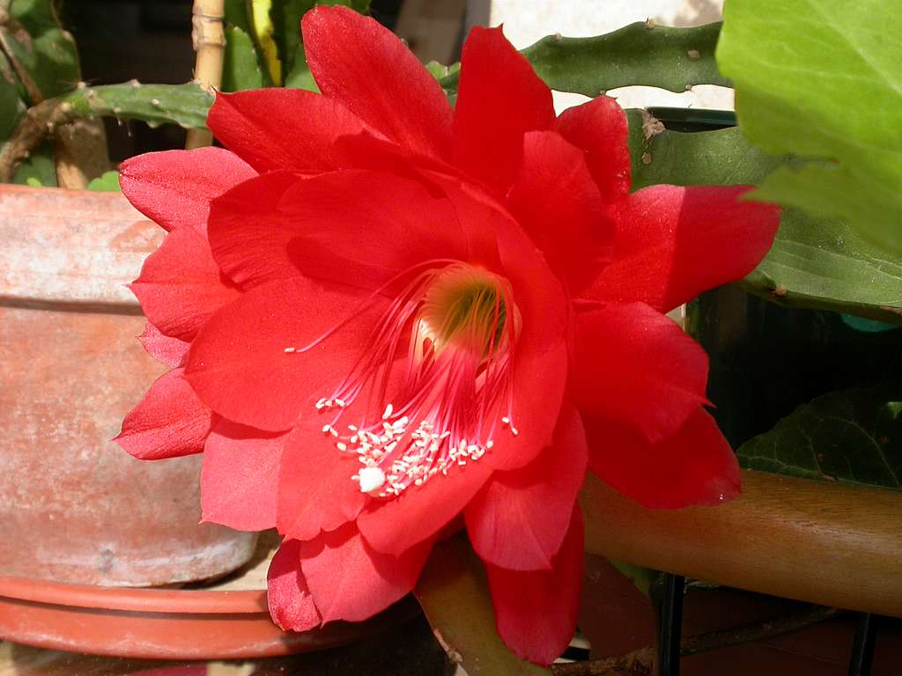
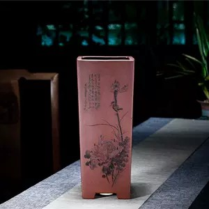

Tuần thứ hai sau khi Từ Tư về Thượng Hải, mới có thời gian đích thân đến Đằng Dược một chuyến.
Sau khi trở thành cổ đông có số cổ phần kiểm soát Đằng Dược, anh vẫn chưa chính thức xuất hiện trong nhà xưởng. Thứ nhất, anh đang bận việc của thị trường nước giải khát Từ Phong ở Hoa Bắc và chuẩn bị cho dự án Little Red Horse, thứ hai là anh có chủ ý, cho rằng Giang Hồ không muốn anh can thiệp quá nhiều vào công việc nội bộ của Đằng Được. Cô gái này nhất định có bản tính độc đoán như bố mình. Anh không muốn thay đổi mối quan hệ của mình với Giang Hồ từ căng thẳng trước đây sang một dạng căng thẳng khác.
Vì vậy hôm nay anh không báo với ai mà đã đến Đằng Dược, không ngờ trước khi gặp được Giang Hồ lại chứng kiến một cuộc giằng co nho nhỏ.
Trong xưởng Đằng Dược, Bùi Chí Viễn từng mặt dày nịnh nọt trước mặt Từ Tư, sắc mặt sa sầm nổi đầy gân xanh trước một nhóm công nhân mặt mày đen đúa, nghiêm giọng quát: “Lão Lưu, ông làm việc trong xưởng đã nhiều năm như vậy, lẽ nào còn không biết quy tắc? Ăn cơm trưa xong không nghỉ ngơi cho tốt, ở đây đấu địa chủ giống cái gì chứ?”
Thấy vậy, Từ Tư vừa đi tới cửa xưởng, liền lặng lẽ đứng đó quan sát.
Bùi Chí Viễn đứng đối diện người mà ông đang trách mắng. Người kia có khuôn mặt tròn béo nhẵn bóng, mắt hí bẩm sinh, giống như Phật Di Lặc, nên không thể biết ông ta đang cười hay là không cười.
Giang Hồ đứng cạnh Bùi Chí Viễn, mặc chiếc áo phông trắng và quần jean rách, mang giày Đằng Dược đế cao su viền đỏ nổi bật. Thoạt nhìn, Từ Tư suýt chút coi cô như người làm công trong nhà xưởng. Cô hơi nhăn mày nhìn chằm chằm vào cậu mình. Phía sau cô là một người đàn ông trung niên khập khiễng với vẻ mặt sợ hãi.
Người đã tề tựu đông đủ. Từ Tư lướt qua một lượt, đối chiếu những gì Bùi Chí Viễn vừa nói và lời giới thiệu trước đó của Giang Hồ, anh biết ‘Phật Di Lặc’ hẳn là Lưu Quân, người khập khiễng là Trương Thịnh, học trò của Lưu Quân.
Nghe Bùi Chí Viễn nói xong, Lưu Quân lấy tay áo lau miệng, híp mắt cười nói: “Lão xưởng trưởng của tôi ơi, có phải chuyện gì lớn đâu? Chẳng phải ông còn đầu cơ cổ phiếu à? Ông cược lớn, chúng tôi cược nhỏ thả lỏng chút thôi, đâu cần phải gắt gỏng như vậy. Hơn nữa, đây không phải đang gây khó khăn cho sếp Giang của chúng ta sao? Cô ấy không hiểu tình hình ở đây, sẽ hiểu lầm mọi người đó.”
Vài câu tưởng chừng là vừa cười vừa nói, nhưng không chừa cho Bùi Chí Viễn chút mặt mũi nào, thảo nào tức giận mà mặt lúc trắng lúc xanh.
Giang Hồ vẫn không nói gì.
Bùi Chí Viễn tức đến phát run, chỉ vào Lưu Quân quát: “Đến phòng lao động quyết toán rõ ràng, ngày mai không cần đến nữa.”
Công nhân vây xem ồn ào.
Bùi Chí Viễn nói xong, tức giận chắp tay sau lưng đi về phía lối ra khác của xưởng, những người còn lại chỉ đành nhìn Giang Hồ. Lưu Quân cũng nhìn Giang Hồ: “Cô Giang, tôi đã làm việc hai mươi năm ở nhà xưởng này rồi. Xưởng trưởng Bùi bây giờ là quản lý của phòng lao động, không thể bắt tôi nghỉ việc thế này chứ?”
Ông vừa nói xong liền được các công nhân đứng cạnh ủng hộ.
Giang Hồ cuối cùng cũng lên tiếng, giọng rất nhẹ nhàng: “Chú Lưu, công nhân đấu địa chủ trong nhà xưởng là chuyện không tốt, lo lắng của xưởng trưởng Bùi cũng đúng thôi. Mọi người chẳng qua muốn nghỉ ngơi thư giãn, cậu cũng chỉ nhất thời gấp gáp mới nói ra những lời như vậy, chú đừng để trong lòng, cháu đi nói chuyện với cậu một chút.”
Lưu Quân miễn cưỡng ừ một tiếng, Giang Hồ nhân cơ hội vỗ tay nói: “Mọi người làm việc trước đi, làm cho kịp đợt hàng này, cuối tháng chúng ta làm một buổi liên hoan.”
Các công nhân ngược lại nghe lời cô, chỉ một tiếng ra lệnh là ai nấy đều trở về vị trí. Đối phó xong với nhóm công nhân, Giang Hồ quay đầu, thấy Từ Tư khoanh tay xem trò vui trước cửa nhà xưởng.
Cô bước đến gần Từ Tư, cung kính gật đầu: “Hoan nghênh ông chủ đến thị sát công việc.”
Từ Tư dùng khí thế của ông chủ liếc nhìn ‘Phật Di Lặc béo’ đang ngồi trong xưởng uống trà và đọc báo trước mặt toàn thể công nhân.
Giang Hồ nói: “Đến văn phòng của tôi đi!”
Văn phòng của cô nằm trong ngôi nhà gỗ phía sau nhà xưởng.
Khu xưởng của Đằng Dược đơn giản hơn nhiều so với khu xưởng của Hồng Kỳ, Nó chỉ là một xưởng đóng giày và một căn nhà gỗ rộng một trăm mét vuông phía sau xưởng. Căn nhà gỗ được chia thành bốn phòng, được dùng làm văn phòng cho bộ phận quản lý nhà xưởng.
Văn phòng của Giang Hồ chỉ rộng hai mươi mét vuông, với sàn gỗ thô sơ sáng màu, đệm lót nâu sẫm ở cửa. Từ Tư nhấc chân lau trên đệm.
Cửa sổ nhỏ mở ra phía Đông phòng làm việc, trên bệ cửa sổ đặt một chậu xương rồng. Đây là thực vật duy nhất trong phòng. Dưới bệ cửa sổ là bàn làm việc màu vân gỗ kiểu IKEA, có kích thước ngắn hơn các loại bàn làm việc thông thường vì cần trang bị thêm ghế văn phòng. Ghế văn phòng thực chất không phải là ghế văn phòng mà là một chiếc ghế sô pha đơn dùng trong gia đình, được bọc đệm trắng êm ái mềm mại, khi ngồi nhất định rất thoải mái.
Từ Tư chọn một chiếc ghế êm ái ngồi xuống, Giang Hồ đành phải chuyển sang chiếc ghế sô pha đôi đối diện với bàn làm việc.
Sô pha đôi có màu cam, có thể tách thàn
h giường sô pha. Ba chiếc ghế đẩu tròn ba chân màu hoa quả được xếp bên trái sô pha. Bên phải là một tủ thấp đa năng nhỏ màu gỗ, vừa có thể sử dụng như bàn cà phê, vừa là nơi để đồ.
Từ Tư không khỏi hỏi: “Trong tủ này để chăn bông à?”
Giang Hồ gật đầu. Dường như cô đã sẵn sàng cho cuộc kháng chiến lâu dài, anh nghĩ.
Giang Hồ lấy một chai nước khoáng Watsons từ giá sách bên cạnh bàn làm việc đưa cho Từ Tư, nói: “Tôi không uống trà hay cà phê, chỉ đành đón tiếp sơ sài thôi.”
Giá sách cũng màu gỗ, có chín tầng, sách và đĩa CD được đặt ở năm tầng trên cùng, thức ăn và đồ dùng hàng ngày được đặt ở ba tầng dưới, gì mà bàn chải đánh răng, tách trà, nước khoáng, bánh mì, bánh quy và sô cô la đều được đặt chung với nhau. Tầng dưới cùng là một ngăn tủ có cửa mở, có lẽ là đặt quần áo để thay của Giang Hồ.
Từ Tư không hỏi, anh vặn nắp chai uống một hớp nước, nhìn bao bì lần nữa rồi nói: “Khuyên cô nên đổi sang nước tinh khiết của Từ Phong.”
Giang Hồ lấy một túi bánh mì và một ống nhôm trên giá sách, ống nhôm trông giống như kem đánh răng.
Cô nói: “Tôi vẫn chưa ăn trưa, anh không ngại để tôi lấp bụng đói trước chứ?”
Từ Tư mời cô cứ tự nhiên.
Giang Hồ vặn mở ống nhôm, ép phần bên trong ống nhôm lên bánh mì rồi cắn một miếng lớn. Biểu cảm khi ăn của cô rất đáng yêu, hai má phồng lên, không giấu giếm trước mặt anh. Chỉ là Từ Tư không thể chịu được thứ giống như kem đánh răng mà cô quét lên bánh mì rồi ngấu nghiến nó một cách thích thú như vậy. Anh đưa tay kéo ống nhôm ra khỏi tay cô, hóa ra là trứng cá muối với thì là.
Anh hỏi: “Thứ này ăn với trứng và bánh quy giòn, cô ăn kiểu này sao?”
Giang Hồ bình tĩnh giải quyết bánh mì trong tay, mới nói: “Thì tiện mà.”
Từ Tư liếc nhìn chiếc túi cô để bánh mì: “Thật đúng là sính ngoại, Paul gần đây nhất là ở Kim Kiều đúng không? Bánh mì kiểu cũ ngon vậy sao? Cứng đến mức có thể đánh người.”
Giang Hồ vỗ tay cười: “Mua tại cửa hàng ở Tân Thiên Địa, tôi luôn cảm thấy bánh mì ở đó ngon hơn những chi nhánh khác.”
Từ Tư cũng cười. Giang Hồ luôn duy trì chất lượng cuộc sống của mình, rất tốt. Cô đang sống rất nghiêm túc và vui vẻ.
Giang Hồ lấy một ít tài liệu từ trong cặp đưa cho Từ Tư: “Đây là báo cáo công việc gần đây.”
Từ Tư đặt trứng cá muối trong tay xuống, cầm tài liệu đọc từng cái một.
Đây là mục đích của anh đến đây hôm nay, vậy nên anh nhất định không được lơ là. Công việc quản lý và công tác tài chính sau khi Đằng Dược được tổ chức lại, cô xử lý rất tốt, có thêm người chuyên nghiệp giúp đỡ, anh rất an tâm. Anh xem xong tài liệu, trả nó lại cho cô.
Giang Hồ không có ý định che giấu vấn đề cô gặp phải trước mắt, cô nói: “Ở đây có vài người cũ còn thói quen xấu, không thể thay đổi trong thời gian ngắn. Nhóm công nhân của Lưu Quân đã quen lười biếng, luôn đấu địa chủ ở nơi làm việc.”
Từ Tư hỏi: “Cậu cô không phải vừa mới biết chuyện này đấy chứ?”
Giang Hồ không nói gì, xem như thừa nhận. Từ Tư cuối cùng cũng hiểu tại sao Đằng Dược chỉ dựa vào sự bố thí của Giang Kỳ Thắng để kiếm sống nhiều năm như vậy.
Lúc này có người gõ cửa, Giang Hồ trả lời: “Mời vào.”
Trương Thịnh khập khiễng đẩy cửa ra, thấy Giang Hồ đang tiếp khách, anh ngập ngừng nói: “Tôi …”
Giang Hồ nhanh nhẹn dễ gần nói: “Mời vào, vị này là sếp Từ của Từ Phong.”
Trương Thịnh sửng sốt một chút, chỉ đành khập khiễng bước vào cúi đầu chào anh: “Chào chủ tịch”
Sau Trương Thịnh đó đứng im không dám nói gì.
Giang Hồ gỡ một chiếc ghế đẩu tròn mời anh ngồi xuống, ân cần nói: “Đừng lo lắng, ông chủ đã nhìn thấy chuyện vừa rồi. Tôi đang định giải thích đôi chút.”
Từ Tư khó hiểu nhìn Giang Hồ, vì ngoài vẻ dễ gần trong giọng điệu, còn có chút bất lực và ấm ức. Có trời mới biết cô sao lại đột nhiên ấm ức?
Hiển nhiên Trương Thịnh cũng thấy vậy, gương mặt hiền lành đầy xấu hổ, ngập ngừng do dự mới lắp bắp nói với Từ Tư: “Chủ tịch, tuy công nhân đấu địa chủ trong giờ nghỉ trưa, nhưng họ vẫn làm việc rất chăm chỉ.”
Đây rõ ràng là đang giúp Giang Hồ giải thích. Nhưng Từ Tư lại tự hỏi bản thân, chuyện này từ đầu đến cuối, anh chưa từng nói một lời áp lực mà nhỉ? Anh quyết định không phát biểu ý kiến, xem cô đang diễn trò gì.
Giang Hồ tiếp lời Trương Thịnh, giải thích: “Là thế này, sáng nay tôi đã hỏi Trương Thịnh để tìm hiểu tình hình của từng tổ trưởng, Trương Thịnh có nói về chuyện đánh bạc vào buổi trưa, kết quả cậu vừa lúc đi ngang nghe thấy, bắt tại trận vào trưa nay.”
Từ Tư phối hợp gật đầu đáp lại lời giải thích của Giang Hồ.
Giang Hồ nói tiếp: “Chúng tôi sẽ giải quyết tốt.”
Trương Thịnh nghe vậy, ngập ngừng một chút. Giang Hồ thấy vậy động viên: “Anh còn muốn nói gì nữa? Có một số chuyện nên để ông chủ biết.”
Trương Thịnh mới khó xử nói: “Nếu thầy Lưu không làm nữa, sẽ có hơn một nửa số người đi theo thầy Lưu. Bây giờ rất khó tìm được công nhân, lô giày xuất đến Mỹ kế tiếp sẽ khó xử lý. Xưởng trưởng Bùi bây giờ …”
Anh thành thật đập đập đầu: “Đều là do tôi nói nhiều.”
Từ Tư vẫn không nói, chỉ liếc nhìn Giang Hồ.
Giang Hồ lên tiếng an ủi Trương Thịnh: “Không đâu, họ sẽ không trách anh đâu. Khi cô
ng thức đánh giá hiệu suất mới của chúng ta hoàn thành, mọi người làm nhiều hưởng nhiều, nâng cao hiệu quả và hoàn thành đơn đặt hàng ở Mỹ, sẽ có tiền thưởng. Mọi người sẽ rất vui. Tôi hy vọng mọi người có thể hiểu hệ thống tài chính và nhân sự mới của chúng ta là vì lợi ích của mọi người, tóm lại, sẽ ngày càng tốt hơn. Ông chủ có thể chứng minh điều này.”
Trương Thịnh lại gật đầu lia lịa.
Chỉ nghe Giang Hồ nói tiếp: “Nhưng mà thầy Lưu là người có uy tín cao trong nhà xưởng, một số công nhân sẽ không hiểu bây giờ chúng ta đang làm gì. Chúng ta quản nghiêm để kiếm nhiều tiền hơn cho họ, nếu họ có thể hiểu được điều này, làm sao có thể trách anh? Tôi nói điều này với anh ở trước mặt ông chủ, giống như quân lệnh trạng, nhất định sẽ làm mọi người và nhà xưởng cùng nhau tiến bộ, cùng nhau kiếm tiền.”
Những lời dạt dào cảm xúc của Giang Hồ làm Từ Tư vô cùng bất ngờ, còn Trương Thịnh thì hoàn toàn bị thuyết phục. Trương Thịnh thẳng lưng nói: “Tôi hiểu rồi. Có lẽ mọi người vẫn chưa hiểu được những nỗ lực cực nhọc của cô Giang và xưởng trưởng Bùi thôi!”
Đợi Trương Thịnh khom người cúi đầu rời khỏi, Từ Tư mới hỏi Giang Hồ: “Hóa ra là biến tôi thành tấm phông nền à?”
Giang Hồ cười cười: “Anh đến thật đúng lúc.”
Chuyện ban đầu là như thế này.
Trong những năm qua, Lưu Quân phụ trách sản xuất và tiêu thụ đã tích lũy được nhiều quyền hành ở Đằng Dược, có địa vị cạnh tranh với xưởng trưởng Bùi Chí Viễn. Bùi Chí Viễn trước nay thiển cận, luôn làm ngơ trước những hành vi của Lưu Quân và nhóm người của ông.
Sau khi Giang Hồ chính thức nhậm chức, Lưu Quân không ngang ngược ra mặt với bà chủ mới là cô đây, nhưng ông cũng không xem trọng cô. Nhạc Sam đề nghị Lưu Quân hợp tác làm một báo cáo tiêu thụ mới, nhưng bị từ chối, vì vậy Giang Hồ không còn đề cập đến ý tưởng giao việc tiêu thụ sản xuất do Lưu Quân phụ trách cho Trương Thịnh quản lý theo kế hoạch ban đầu.
Trương Thịnh luôn tự ti vì khuyết tật của mình. Tuy nhiên, anh là người trung thực thân thiện, có tình nghĩa thầy trò với Lưu Quân, nhiều công nhân rất thân thiết với anh. Giang Hồ có ý mời anh uống trà vài lần, rất khiêm tốn xin chỉ bảo, tất nhiên cũng để cho Trương Thịnh thấy sự chân thành của cô, năng lực và tham vọng của cô ở Đằng Dược. Trương Thịnh quả thật là một người chân thành nghĩ về tương lai của nhà xưởng, sau khi thừa nhận Giang Hồ, anh luôn âm thầm lặng lẽ nhắc nhở vài câu.
Hôm nay khi anh ám chỉ nạn cờ bạc của công nhân đang tràn lan trong giờ nghỉ trưa với Giang Hồ, Bùi Chí Viễn tình cờ nghe thấy. Không biết tại sao, Bùi Chí Viễn mấy ngày nay càng khó chịu với nhóm của Lưu Quân, bắt được cơ hội này liền lên cơn tức giận.
Giang Hồ giải thích như vậy, Từ Tư đã hiểu rồi. Anh đánh giá Giang Hồ một lượt, câu ‘không biết tại sao’ này rốt cuộc là chuyện gì, Giang Hồ không giải thích thêm, nhưng Bùi Chí Viễn sao chỉ mới một chút đã tức giận, xem ra là còn có chuyện khác. Anh lại đánh giá cô thêm một lượt, mỗi lần anh nhìn cô, anh lại tìm thấy một điều gì đó mới mẻ, và mỗi lần như vậy anh lại phải nhìn với cặp mắt khác xưa. Bùi Chí Viễn không thể so kịp với mưu kế của Giang Hồ, Đằng Dược giao cho cô, có lẽ là gặp đúng chủ?
Từ Tư nói: “Cô đây là đang bắt nạt người trung thực, lần này Trương Thịnh phải đến chỗ công nhân để làm ủy viên tuyên truyền cho cô.”
Anh thầm nghĩ, đâu chỉ là bắt nạt, vừa nhậm chức, cô đã khơi dậy những mâu thuẫn cũ trong nhà xưởng để tạo điều kiện cho mình hành động khi vừa mới nhậm chức. Bây giờ vẫn còn tâm tư lợi dụng cơ hội sẵn có, đùa giỡn anh như đạo cụ.
Giang Hồ thấy nước trong tay anh đã uống hết, lại đưa cho anh một bình khác nói: “Cậu tôi nhất định không nuốt trôi cơn tức này, cho nên cậu có thể tới mấy nhà xưởng cũ đào người, có thể có vài nơi là chỗ mà ông chủ anh đầu tư, mong anh thông cảm.”
Một hớp nước Từ Tư chưa kịp nuốt xong, suýt nữa thì phun ra.
Giang Hồ chậm rãi nói: “Đương nhiên, chỉ cần tôi có nhiều nhân công, cậu tôi đào người sẽ không thành công.”
Từ Tư đặt nước xuống, cầm lấy trứng cá muối để một bên lúc nãy. Giang Hồ thoạt nhìn rất phóng khoáng, trực tiếp phết trứng cá muối giống như kem đánh răng lên bánh mì. Nhưng thực tế, không ai để ý khi bóp ống nhôm, cô chậm rãi bóp từ đuôi về phía trước, như vậy có thể đảm bảo ống nhôm sẽ không bị vỡ, mỗi tấc trứng cá muối sẽ không bị lãng phí.
Anh đặt trứng cá muối vào tay, hỏi: “Sao không thấy xe của cô?”
Giang Hồ nói: “Trong nhà xưởng có Kim Bôi*.”
*Kim Bôi là một thương hiệu xe của Trung Quốc, nói chung là rẻ hơn chiếc Porsche.
Từ Tư trả trứng cá muối cho Giang Hồ, cũng là lúc nói lời tạm biệt. Buổi tối anh còn phải dùng cơm cùng Tề Tư Điềm. Doanh số tiêu thụ nước giải khát mới của Từ Phong ở phía Bắc đang rất khả quan, trong đó không thể thiếu công quảng cáo của Tề Tư Điềm, các nhà quảng cáo khác cũng vừa ý cô, đưa ra những hợp đồng hàng chục triệu. Tề Tư Điềm nói muốn mời anh ăn tối, đã chọn tại Cee Club. Đã gần đến giờ, dù ghế của Giang Hồ rất êm ái, nhưng anh vẫn tự bảo mình đứng dậy.
Giang Hồ đứng dậy tiễn anh, đồng thời dặn bảo vệ lấy xe cho an
h.
Khi Từ Tư đến Cee Club, Tề Tư Điềm vẫn chưa đến. Đầu bếp vừa hay có cơ hội mời anh thưởng thức món mới sáng tạo của mình - bánh mì phết trứng cá muối và sashimi cá hồi, với hình thức sang trọng và đắt tiền. Hương vị cũng rất độc đáo, Từ Tư ăn thử một miếng, hỏi đầu bếp lấy ý sáng tạo từ đâu.
Đầu bếp nói: “Có lần thấy cô Giang ăn như thế này, nên có được cảm hứng.”
Từ Tư đặt nĩa xuống, cười hỏi: “Cô ấy tìm đến anh à?”
Đầu bếp giải thích: “Cô Giang là một người rất thú vị. Cô ấy đến tìm tôi, nhờ tôi giới thiệu hai đầu bếp đến nhà xưởng của cô ấy để nấu bữa ăn cho nhân viên, lương tháng không thua gì khách sạn cao cấp.”
Từ Tư cầm khăn ăn lên lau miệng, cười nói: “Đúng là rất thú vị.”
Người phục vụ dẫn Tề Tư Điềm đến, anh quyết định thưởng thức bữa tối ngon miệng này trước.
Sau bữa ăn, Từ Tư lái xe đưa Tề Tư Điềm về nhà, suốt dọc đường cũng lười tìm chủ đề nói chuyện. Vẫn là Tề Tư Điềm mở lời trước, cô hỏi: “Em nghĩ bar ở Cổ Bắc là một nơi hay ho, chẳng hạn như More Beautiful.”
Từ Tư cười: “Chạy quảng cáo mấy tháng nay, không mệt à?”
Tề Tư Điềm nghiêng đầu: “Cho nên mới cần phải thư giãn.”
Từ Tư vẫn lái xe đến tầng dưới căn hộ của Tề Tư Điềm.
Sau khi xuống xe, Tề Tư Điềm nói: “Hay uống một tách cà phê đi? Em mang về từ Ireland, hương vị khá đặc biệt. Người Anh địa phương nói đùa rằng, nếu tiến vào thị trường Trung Quốc sẽ mời em làm đại diện.”
Từ Tư đỡ eo Tề Tư Diềm, nhẹ nhàng đẩy cô vào chung cư: “Bây giờ đã chín giờ rồi.”
Tề Tư Điềm vẫy tay, cười chào tạm biệt anh.
Từ Tư không nán lại, nhanh chóng quay vào xe, lái về hướng đường hầm vượt sông.
Tề Tư Điềm nhìn anh lái xe đi, đứng ở dưới lầu một lúc. Cô đã chuẩn bị một buổi lễ nhỏ để chúc mừng Từ Tư ở quán bar cô quen thuộc, nhưng dường như vô ích rồi. Cô hứng gió, gọi điện xin lỗi người bạn đã giúp cô chuẩn bị.
Tất nhiên, Từ Tư không biết những chuyện này. Anh bật đài FM, tin tức nói chủ tịch của Toyota đã xin lỗi khách hàng Trung Quốc, anh mới nhớ mình vẫn đang lái chiếc Lexus này. Có lẽ nên đổi xe rồi.
Ra khỏi đường hầm, anh lái xe về phía Nam, nhất định sẽ lại đi ngang Đằng Dược. Nơi đó có nhà xưởng tồi tàn cũ kỹ, những công nhân lười biếng thành thói, xưởng trưởng tầm nhìn thiển cận, những người trung lưu cao ngạo độc đoán. Toàn bộ đều là những vấn đề mà Giang Hồ phải đối mặt. Nhưng cô vẫn là một đại tiểu thư cần được cung phụng.
Từ Tư cong môi cười. Anh lái xe về hướng Đằng Dược, cuốn bụi mù mịt trên mặt đường.
Giang Hồ ngả mình trên chiếc ghế êm ái, tay cầm tách trà ngẩn người.
Văn phòng ở đây gần đường lớn, xe cộ qua lại trên đường sẽ rung chuyển mặt đất, ở đây cũng sẽ rung chuyển. Sự chấn động tạo ra bởi sự cộng hưởng này có thể khiến mọi người cảnh giác, chẳng có gì không tốt.
Trên thực tế, cô đang rất bồn chồn. Đúng vậy, dù đã ký hợp đồng với Từ Phong, nhưng cô vẫn không thể chắc chắn. Đằng Dược cuối cùng cũng lung lay trở về tay cô, nhưng cô sợ mình sẽ không cẩn thận đánh mất Đằng Dược.
Chuyến thăm đột ngột của anh hôm nay làm cô toát mồ hôi lạnh. Việc quản lý trong nhà máy mất cân đối bị anh nhìn ra, không biết sẽ nảy sinh ý nghĩ gì.
Giang Hồ cầm tờ báo tối trên tay, trong trang giải trí, công chúa nhỏ phim truyền hình Tề Tư Điềm được nâng làm nữ chính của bộ phim ăn khách tại Liên hoan phim Tokyo, đồng thời vận may đào hoa của cô cũng khiến các phóng viên phải xuýt xoa thổi phồng các chức năng mới trong nước giải khát mới của Từ Phong. Tin đồng kéo dài này không phải là vô ích, đầu vào và đầu ra hoàn toàn tương xứng. Giang Hồ cười nhạt. Con người Từ Tư này muốn nắm quyền kiểm soát trong bất kỳ tình huống nào.
Cô thật sự khó chịu khi nghĩ thông điểm này, cô đã sống hơn hai mươi năm, đây là lần đầu tiên cô cầu xin người khác, lần đầu tiên dâng mạch đập của mình cho người khác bóp, quá quá quá ấm ức rồi. Nhưng mà, nếu bố đứng ở lập trường của Từ Tư, e là cũng sẽ như vậy? Nếu đổi là mình đứng ở lập trường của Từ Tư thì sao? Giang Hồ so sánh, bình tĩnh trở lại.
Cô tự nhủ: “Chẳng qua bên A lúc đầu đã trở thành bên B.”
Cô uống hết cốc nước trắng, chấn chỉnh tinh thần, thay một bộ quần áo thể thao màu trắng, đổi một đôi giày chạy bộ, quyết định chạy một vòng quanh nhà xưởng.
Từ Tư lái xe đến đối diện Đằng Dược mới dừng lại, cánh cổng sắt di động đóng chặt, ban đêm nhà xưởng ngừng hoạt độnng.
Anh dừng ở đây, gọi điện cho quản gia ở biệt thự Phố Đông, dặn những chuyện rất nhỏ, chẳng hạn chuẩn bị nước tắm, chuẩn bị đồ ăn nhẹ đêm khuya, thêm một trứng ốp lết vào mì Dương Xuân, nhưng ốp lết phải ăn kèm với tương Kikkoman. Nói xong, anh định khởi động xe thì cửa hông cổng sắt bên kia đường mở ra, tay anh vừa đặt trên vô lăng thì thấy có người chạy ra. Đèn đường xung quanh nhà xưởng cách nhau mười mét, ánh sáng rất yếu, Từ Tư nheo mắt nhận dạng, mới nhận ra là ai --- Giang Hồ mặc áo khoác trắng, hình như tóc mái được buộc lại, để lộ vầng trán.
Từ Tư nâng khuỷu tay, áp ngón trỏ lên môi, bất giác mỉm cười. Ban đêm, con đường bẩn thỉu như vậy, đèn đường mờ ảo như vậy, cô còn ra ngoài chạy bộ. Có lẽ không khí bên ngoài rất tốt,nên an
h lại nghiện thuốc lá. Từ Tư thuyết phục mình mở cửa xe, vừa hút thuốc vừa tựa vào xe. Nhìn Giang Hồ chạy vòng quanh đến đầu kia của nhà xưởng.
Một ngày trước khi anh rời Thượng Hải một tháng trước, khi anh đưa Giang Hồ đến Bác Đa tân ký ăn tối, anh biết trạng thái của cô không tốt, dù cuối cùng đã thuyết phục được người tiêu tiền như nước là anh đây cho phép cô trở thành cổ đông và tham gia đội ngũ quản lý. Giang Hồ trước ngày hôm đó không giỏi lắm trong việc ổn định cảm xúc.
Nhưng Giang Hồ khi bước vào Đằng Dược đã điều chỉnh lại trạng thái của mình. Tình hình trong nhà xưởng rất gượng gạo và hỗn loạn, cô bình tĩnh quan sát, sau đó sắp đặt từng quân cờ, không hề gấp gáp. Đằng Dược có thể làm cô gái mồ côi vỗ cánh bay lần nữa, cũng xem là một phần công đức của anh. Từ Tư thổi vài vòng thuốc lá, dập tàn thuốc rồi lên xe.
Bóng dáng đang chạy của Giang Hồ mờ mờ xuất hiện ở đầu kia của nhà xưởng, rồi đột nhiên dừng lại. Ánh mắt Từ Tư dừng trên người cô. Cửa hông nhà xưởng lại lặng lẽ mở ra trong màn đêm mờ mịt, có người đạp chiếc xe ba bánh ra ngoài, còn có một người theo sau. Giang Hồ nhanh chóng trốn vào một góc mà Từ Tư không nhìn thấy, Từ Tư theo bản năng cuộn cửa kính xe lên.
Cả hai đều nhìn chằm chằm vào chiếc xe ba bánh chất đầy bao tải, người đạp xe ba bánh lâu lâu lại khom người thở hổn hển, người đi sau đẩy phía sau xe. Hai người một xe từ từ biến mất trong đêm đen.
Giang Hồ từ trong góc đi ra, nhưng vẫn đứng ở chỗ khuất ánh sáng, nếu không nhìn kỹ sẽ không thấy cô. Nhưng Từ Tư có thể nhận ra bóng dáng kia.
Khi Giang Hồ đi ra liền cau chặt mày. Cô nhận ra người đi theo sau xe ba bánh kia là Lưu Quân, ông ta lén lút như vậy, nhất định không phải là chuyện tốt. Cô nắm chặt tay tức giận. Trong mắt cô bây giờ, Từ Tư không phải là người khó đối phó nhất, nhưng Lưu Quân mới là kẻ làm người khác đau đầu.
Đó là lỗi của cô vì đã quá hấp tấp.
Cô mới nhậm chức vào đầu tháng trước, tràn đầy đam mê và hy vọng, Nhạc Sam vạch một số kế hoạch, toàn bị Lưu Quân năm lần bảy lượt trả về. Sau đó đến tìm Lưu Quân muốn cùng ông đến xem các đại lý cũ của Đằng Dược, ông ta vẫn luôn một mực từ chối. Cậu lại xem như không thấy chuyện này. Giang Hồ gần như tức chết, nếu đổi lại là cô lúc trước, thì chẳng thèm quản ông ta, sớm đã gọi ông ta đến trước mặt mắng cho một trận. Nhưng cô đã cố gắng kìm nén tính khí của mình, cô phải thay đổi tính khí cũ để đối mặt với thực tế.
Làm ăn khó khăn là một chuyện, Lưu Quân lén lút đẩy một xe ba bánh chất đầy vật dụng đáng ngờ vào nửa đêm lại là một chuyện khác. Giang Hồ hít thở sâu vài lần, rồi ra lệnh cho bản thân bình tĩnh trước.
Đang định quay lại phòng làm việc, vừa rẽ vào đường chính, cô chợt nhận ra chiếc xe bên kia đường. Nó là một chiếc Lexus, màu bạc nằm trong đêm đen, giống như một con thú nhỏ mang hơi thở của một con rùa. Con thú nhỏ màu bạc nhanh chóng khởi động, biến mất trong khoảng thời gian rất ngắn.
Giang Hồ trở lại phòng làm việc, kéo giường sô pha ra, nặng nề nằm xuống. Vừa quay đầu, cô nhìn thấy chiếc ghế mà Từ Tư ngồi lúc sáng. Cô nghĩ mình không nhìn lầm, đường rộng sáu làn xe, nhưng cũng đủ để cô nhìn thấy xe của Từ Tư đang đậu đối diện.
Là vị thiếu gia này đã thất thố.
Giang Hồ lười biếng lấy một chiếc gương trang điểm từ trong gối, tự soi mình trong gương, gương mặt xinh đẹp, tràn đầy sức sống, rất giống bố khi còn trẻ. Đây là sự tự tin của cô từ trước đến nay. Kể từ khi cô còn là một thiếu nữ, đã có không ít bạn học nam tán tỉnh cô vì ngoại hình hoặc gia cảnh của cô, theo đuổi cô, cung phụng cho cô những tiện lợi. Mà cô đã quen được cưng chiều, tất nhiên sẽ không từ chối.
Chỉ có một người không làm vậy, anh sẽ không dùng ánh mắt theo đuổi bóng hình cô, cũng như không hạ thấp bản thân để phù hợp với sở thích của cô. Giang Hồ buồn bã. Vì anh sẽ không, những người khác thì có ích gì chứ?
Nhưng mà, cô ngồi thẳng dậy, giơ cổ tay lên nhìn đồng hồ, đã gần mười một giờ, khuya lắm rồi, Từ Tư lại xuất hiện ở đây. Bố từng nói, một mình bước vào đời, phải cố gắng tìm hiểu tâm tư người khác, sau đó xem xét tình hình, lợi dụng tâm tư người khác để bản thân dễ làm việc. Lời này nói không sai. Giang Hồ soi gương cười lộ ra răng hổ nhỏ. Khi còn nhỏ, mọi người đều nói cô là một bé gái đáng yêu, khiến người khác yêu thích. Khiến người khác yêu thích cũng đủ để chiếm được lợi ích. Khi còn nhỏ cô có thể, bây giờ cô vẫn có thể.
Giang Hồ đặt gương xuống, cầm tờ báo tối lên, xem bức ảnh của Tề Tư Điềm lần cuối. Cô gấp báo lại, rồi ném vào sọt rác.
Chỉ nhớ năm đó, còn là bạn học của cô. Không ngờ sẽ dùng cách thức này liên lạc lần nữa. Liệu có quá khó xử không? Cô không suy nghĩ vấn đề này nữa, cô đứng dậy duỗi tay, quyết định ngủ một giấc thật ngon trước, ngày mai sẽ bàn bạc lại với Nhạc Sam.
Không ngờ Nhạc Sam quyết tâm kề vai sát cánh với Giang Hồ ở Đằng Dược mới sáng sớm đã vội cầm bản thảo thiết kế và hợp đồng cung cấp đến tìm Giang Hồ.
Nhạc Sam nói: “Kích thước tấm da mà nhà thiết kế và thợ làm rập của thương hiệu này đưa ra là hai thước, hợp đồng đã ký cũng là ha
i thước, nhưng Lưu Quân mua vật liệu da hai thước hai, báo với xưởng trưởng Bùi là hai thước mốt. Ông ta báo số đơn đặt hàng cuối cùng cho nhà xưởng không khớp với số đơn hàng cuối cùng thực tế được sản xuất.”
Giang Hồ tự mình kiểm tra các chi tiết trong hợp đồng cung cấp, đối chiếu bản thảo thiết kế, và vô cùng tức giận.
“Đơn hàng cuối cùng của đợt hàng này là do đại lý có quan hệ lâu năm của xưởng trưởng Bùi nhận hàng, nhưng số đơn hàng cuối cùng mà Lưu Quân giấu không rõ đã đi đâu.”
Giang Hồ cười lạnh: “Xem ra cậu không hề biết Lưu Quân giấu giếm, sao cậu có thể bất cẩn như vậy!”
“Trưởng phòng tài chính trước kia là người nhà của Lưu Quân, giấu giếm xưởng trưởng là chuyện rất dễ.”
“Cháu vốn dĩ hy vọng ông ta có thể ra sức cho nhà xưởng lần nữa.” Giang Hồ thở dài.
Nhạc Sam thu dọn tất cả văn kiện.
Giang Hồ nói: “Nếu bây giờ cháu sa thải ông ta, ông ta sẽ lập tức dẫn một nhóm công nhân lành nghề đi.”
Nhạc Sam tức giận nói: “Hiện giờ doanh số bán hàng trực tuyến đang phát triển mạnh mẽ, đơn đặt hàng cuối cùng của thương hiệu nổi tiếng mang lại lợi nhuận khá cao, cháu có thể tưởng tượng lợi nhuận của Lưu Quân sẽ là bao nhiêu. Những con sâu mọt dưới trướng cũng sẽ như vậy, có tốt lành gì hơn?”
Giang Hồ cân nhắc, cẩn thận nhìn Nhạc Sam. Bà vốn cũng là người mạnh mẽ kiên quyết, nhưng Giang Hồ lại nói: “Nếu là bố, ông ta sẽ lập tức bị sa thải.”
Nghe cô nhắc đến bố mình, mặt Nhạc Sam ngây ngô đỏ lên, sau đó thở dài nói: “Bây giờ không giống lúc trước, nhưng không thể dung túng được.”
Đúng vậy, Giang Hồ gật đầu: “Có thể giữ lại công nhân lành nghề, dù sao vẫn tốt hơn là tuyển người khi thiếu lao động.”
Cô lại thất vọng: “Đằng Dược suy bại đến mức này, Lưu Quân và cậu đều phải chịu trách nhiệm.”
Nhạc Sam cũng thất vọng: “Đúng vậy.”
“Trước tiên vẫn phải cách chức họ hàng xa của Lưu Quân ở phòng tài chính, vẫn phải giết gà dọa khỉ làm gương.” Giang Hồ nói.
Thật là trẻ nhỏ dễ dạy, Nhạc Sam cảm thấy yên tâm vui mừng.
Giang Hồ làm nũng với Nhạc Sam: “Dì Nhạc, cháu thật may mắn khi có dì ở bên.”
Nhạc Sam lại đỏ mặt. Hành động của Giang Hồ giống như đứa con gái nhỏ của mình, đáng thương biết bao, đáng yêu biết bao. Bà nghĩ đến Giang Kỳ Thắng, lại cảm thấy buồn.
Giang Hồ nhanh chóng ký lệnh sa thải, giao cho Bùi Chí Viễn.
Bùi Chí Viễn sau khi đọc xong đã vô cùng tức giận, hét lên: “Hóa ra bọn họ cá mè một lứa lâu như vậy!”
Giang Hồ nhìn cậu nhẹ nhàng lắc đầu, bảo cô nên nói thế nào đây? Căn bệnh mãn tính của Đằng Dược là điểm này. Lưu Quân và cậu đều là những người kiếm thêm khoản thu nhập, nhìn vào lợi nhuận vụn vặt mà không nghĩ đến việc tiến bộ, thật đáng buồn đáng tiếc.
Giang Hồ làm vẻ mặt bất lực: “Nhưng một đám công nhân sẽ đi theo ông ta.”
Bùi Chí Viễn chỉ muốn Lưu Quân đi càng sớm càng tốt, gần đây thỉnh thoảng có công nhân đến tố cáo Lưu Quân đã làm gì sau lưng ông, ngấm ngầm bôi nhọ ông kém cỏi, cuối cùng đốt lên lửa giận trong lòng ông.
Đến lúc bộc phát rồi, Giang Hồ vừa dứt lời, ông liền đập bàn: “Cho ông ta cút. Mẹ kiếp, ở sau lưng cậu kiếm nhiều tiền như vậy. Sợ gì chứ, cậu trơ mặt già này đến Chiết Giang, không tin không kiếm được vài người đến đây.”
Giang Hồ rụt rè gật đầu: “Cậu à, cậu cháu ta cùng làm việc không dễ dàng, người bên ngoài đều giở trò quỷ, nên chúng ta phải đoàn kết, làm tốt công việc, không thể để người ngoài ăn hời của chúng ta.”
Bùi Chí Viễn cũng có chút tấm lòng quan tâm của trưởng bối, vỗ vỗ ngực: “Được rồi, cậu biết tấm lòng của cháu, ngày mai cậu sẽ đến Chiết Giang dạo vài vòng.”
Giang Hồ lấy ra vài văn kiện, đưa cho Bùi Chí Viễn, cô nói: “Cậu đừng gấp, cháu và giám đốc Nhạc tạm thời nghĩ ra một cách.”
Bùi Chí Viễn vô cùng kinh ngạc khi nhìn thấy, sau đó liếc nhìn đứa cháu gái nhỏ nhắn yếu ớt mỏng manh. Ai mà ngờ được cô lại nghĩ ra một cách táo tợn và nham hiểm như vậy?
Đây là quy chế phát thưởng thành tích do phòng tài chính đưa ra, để thưởng cho bộ phận sản xuất và bộ phận kinh doanh, năm nay có ngoại lệ cho các nhân viên cũ đã làm việc ở hai bộ phận này trên một năm, tuy nhiên, để phân biệt lương gấp đôi cuối năm, thưởng thành tích dự kiến phát hành vào cuối quý đầu tiên của năm.
Giang Hồ gợi ý cho Nhạc Sam viết bản báo cáo này với mục đích rất rõ ràng, đó là đối phó với thủ đoạn của Lưu Quân nhằm xúi giục công nhân từ chức. Bây giờ chuyện của Lưu Quân đã bại lộ, sự trả thù lớn nhất mà ông ta có thể làm ngay lúc này là đưa một nhóm công nhân cùng chí hướng đầu quân cho nhà xưởng khác, làm nhân lực của Đằng Dược cạn kiệt, không có khả năng trả các đơn hàng nước ngoài. Với trình độ của mình và tình trạng thiếu lao động trong ngành hiện nay, ông ta hoàn toàn không lo lắng về việc tìm chủ mới.
Nhưng một khi Giang Hồ thay đổi hệ thống phát lương, toàn bộ tình hình sẽ khác. Những công nhân có kế hoạch đi theo Lưu Quân chắc chắn sẽ không từ bỏ những lợi ích có thể nắm trong tay này, mà đến nhà xưởng mới không rõ nội tình, dốc sức làm một lần nữa.
Một Giang Hồ nhỏ bé sao có thể nghĩ ra kế hoạch này? Khi Bùi Chí Viễn ký vào bản báo cáo, tay ông không tự chủ
mà run lên.
Khi Từ Tư đến Đằng Dược kiểm tra công việc với lý do là giám sát thường lệ, Giang Hồ giao hết báo cáo cho anh. Anh cẩn thận đọc bản báo cáo.
Chỉ là trong toàn bộ quá trình, Từ Tư nhìn báo cáo rồi nhìn Giang Hồ.
Cô thật sự rất biết giả vờ, đang dùng thái độ tự trách để kiểm điểm: “Là do tôi ban đầu quá ngây thơ khi nghĩ về nguồn nhân lực này, bây giờ làm thế này chỉ có thể coi là một cách khắc phục.”
Từ Tư đặt bản báo cáo xuống. Bản báo cáo là một bản báo cáo hay, rất chiến lược và táo bạo, đồng thời cũng phù hợp với lời hứa không coi thường lợi ích của người lao động. Có thể nói được làm được, là tố chất của một quản lý giỏi.
Chỉ là Từ Tư xoa xoa thái dương, anh không thích bộ dạng cố làm ra vẻ của cô cho lắm, anh cắt ngang vào vấn đề chính: “Vậy tiếp theo ai là người phụ trách sản xuất, ai phụ trách tiêu thụ?”
Giang Hồ lập tức đưa ra giải pháp: “Trương Thịnh đảm nhiệm được chức vụ giám đốc bộ phận sản xuất, marketing và tiêu thụ thì tôi sẽ đảm nhận trước. Bây giờ Đằng Dược chỉ là một xưởng phân phối cho một vài cửa hàng bán lẻ và một số cửa hàng bán dụng cụ thể thao ở vùng khác.”
Từ Tư cười: “Vừa làm marketing vừa làm tiêu thụ?”
“Chỉ là cách đối phó trong thời kỳ đặc biệt thôi.”
“Nếu vẫn có công nhân rời đi với Lưu Quân thì sao?”
Giang Hồ khẩn thiết nhìn Từ Tư: “Cậu tôi cũng lo lắng về vấn đề này, vì chất lượng sản phẩm do OEM này gia công rất tốt, phía Mỹ đang bàn thêm đơn đặt hàng với chúng ta, nhưng tôi nghĩ năm nay Đằng Dược sẽ tung sản phẩm mới ra thị trường. Nhân lực … quả thật là một vấn đề lớn.”
Từ Tư day day thái dương, phát hiện mình bị gài tròng rồi. Có điềm báo trước những chuyện sau đó của cô gái này, chắc chắn sẽ khiến anh đau đầu.
Giang Hồ lộ ra vẻ mặt khó xử: “Cậu tôi quyết định đến Chiết Giang tìm vài thợ giỏi.”
Từ Tư là người thông minh, anh hiểu ngay: “Định đào người của tôi à?”
Giang Hồ có hơi tự cho mình là đúng: “Không thể nói như vậy, cạnh tranh công bằng trên thị trường nhân lực mà! Tuy cũng là cùng nhận được tài trợ của Từ Phong như họ, nhưng chúng tôi hy vọng thông qua nỗ lực của mình, có thể làm sếp hài lòng về lợi nhuận.”
“Nói như vậy, là vì nghĩ cho tôi à?” Từ Tư cười giễu.
Giang Hồ biết anh đang tức giận. Cô biết Từ Tư không bao giờ cho phép cạnh tranh hằn học giữa các nhà máy do Từ Phong đầu tư gây xích mích nội bộ. Anh đang tỏ rõ giới hạn của mình. Hành động của cô lúc này đang chạm vào giới hạn của anh. Nhưng không còn cách nào khác, những nhà xưởng đó là bộ phận cũ của Hồng Kỳ, cậu cũng có vài mối quan hệ, đụng chạm vài lần là điều không thể tránh khỏi, thay vì cảm thấy khó xử sau khi sự việc xảy ra, chi bằng báo cáo trước với anh.
Cô cười cười với anh, cười một cách bất lực.
Giang Hồ vẫn thấp thỏm trong lòng. Anh không nói, chắc hẳn anh đang thầm ước chừng cô, đánh giá cô, xem cô có đủ sức để cùng hợp tác hay không. Cô nghĩ đến đây, bất giác cười giễu bản thân, mình lại bị người khác nghĩ như vậy.
Từ Tư nhìn thấy nụ cười thoáng qua trên môi cô, có lẽ là đang tự giễu. Cô có khó xử của mình, nhưng may là vẫn còn trung thực, dù anh không thể công nhận điều nay.
Anh đưa bản báo cáo lại cho Giang Hồ, anh không đưa ra ý kiến về những gì cô vừa nói, mà nói: “Tôi sẽ dành thời gian để tham dự hội nghị cấp cao của mọi người trong vài tháng tới.”
Những lời vô lý và không hợp lẽ thường của anh đã thổi bay não của Giang Hồ, cô gần như hét lên: “Cái gì?”
“Chi phí nhân lực tăng quá nhiều, công tác quản lý gặp vấn đề nghiêm trọng, việc phát triển sản phẩm mới bị đình trệ.” anh lập tức liệt kê ba lý do đủ để Đằng Dược nhận được sự ‘quan tâm đặc biệt’ của cổ đông lớn là anh.
Giang Hồ không thể phản bác: “Được thôi, nên như vậy mà.”
Từ Tư chuẩn bị rời đi, bắt tay với cô, bàn tay cô trắng nõn và mềm mại, anh gần như không muốn buông tay.
Chỉ hai tuần sau đó, Từ Tư nhận được thư mời đến cuộc họp mẫu sản phẩm mới từ Giang Hồ, dùng giọng điệu của cấp dưới mời lãnh đạo đến tham gia và chỉ đạo hội nghị cấp cao.
Từ Tư đến Đằng Dược như đã hẹn. Không ngờ nhà xưởng Đằng Dược lần này lại thay đổi dáng vẻ: bảo vệ cần mẫn túc trực ở cổng, chuyên nghiệp đỗ xe cho anh vào khu vực quy định, các đường kẻ ô ngang màu trắng đều được vẽ thẳng tăm tắp. Giang Hồ và quản lý của cô đang ở trong phòng họp chờ Từ Tư đến. Phòng họp là một không gian được tách từ nhà xưởng, ngăn bằng kính trong suốt, treo màn hình chiếu, dựng bảng viết, trên tường dán ảnh của những người ở mọi lứa tuổi mang giày Đằng Dược.
Từ Tư bước vào chào mọi người, anh nhìn thấy Giang Hồ đầy sức sống dẫn đầu đoàn người. Cô mỉm cười với anh: “Chào buổi sáng ông chủ.”
Trong phòng, cô là người duy nhất có tinh thần và tự nhiên nhất, những người còn lại như Nhạc Sam, Bùi Chí Viễn, Lưu Quân đều đang âm thầm quan sát anh. Anh chủ động ngồi vào ghế chủ tịch, bình tĩnh ung dung nghe Giang Hồ mở cuộc họp.
Giang Hồ tuyên bố hai chuyện trong cuộc họp, chuyện thứ nhất là các đơn đặt hàng cuối cùng sẽ do bộ phận tài chính kiểm toán xong mới có thể được bán ra, chuyện thứ hai là công bố tiêu chuẩn đánh giá hiệu suất
mới mà ‘Từ Tư cũng đã chấp thuận’.
Cô rất biết tự quyết định, Từ Tư nhớ mình chưa từng ra bất kì chỉ thị nào với phần báo cáo này cả. Cô đang lợi dụng sự bao dung của anh.
Trong phòng, chỉ có duy nhất Lưu Quân bị tính kế đột nhiên biến sắc, híp mắt nhìn Từ Tư, không dám tức giận, cũng tìm không được lý do thích hợp để tức giận.
Giang Hồ còn đổ thêm dầu vào lửa: “Chiều nay nhà thiết kế sẽ mang mẫu giày mới đến.”
Lưu Quân rõ ràng rất ngạc nhiên, cứng đờ gượng gạo hỏi: “Làm sản phẩm mới từ khi nào?”
Giang Hồ ôn hòa trả lời: “Cũng không phải là mẫu mới, chỉ cải thiện vẻ ngoài của giày vải quân đội kiểu cũ của nhà xưởng chúng ta một chút, thay đổi chất vải phần trên. Hôm qua, Trương Thịnh đã ráp xong đế cao su, chỉ đợi hôm nay nhà thiết kế mang đến đệm giày được làm mới lại thì sẽ hoàn tất.”
Nói xong, cô bình tĩnh nhìn Trương Thịnh.
Trương Thịnh vô cùng bồn chồn, bị Lưu Quân trừng mắt trước mặt mọi người.
Tất cả đều lọt vào mắt Từ Tư, anh nghĩ, cô lại gieo rắc mối bất hòa công khai như vậy.
Sau cuộc họp, Giang Hồ hào phóng mời Từ Tư dùng bữa trưa trong nhà ăn.
Nhà ăn cũng được xây lại sau khi cô đến, tường được sơn mới, đổi bàn đỏ ghế trắng, giống như viền đỏ nền trắng trên đôi giày Đằng Dược. Nhìn nơi nào cũng thấy rất dụng tâm.
Danh sách thực đơn cho bữa trưa được viết trên bảng đen ở lối vào nhà ăn, hôm nay phục vụ ba món - cơm thịt kho tàu, cơm gà xào tiêu xanh, cơm canh cá Tứ Xuyên. Có ngọt có cay, phù hợp với khẩu vị của công nhân đến từ các vùng.
Giang Hồ tươi cười chào hỏi công nhân trong nhà ăn, có người gọi cô là “sếp”, có người gọi cô là “đại tiểu thư”, cô cũng không để ý.
Nhưng tất cả công nhân đều gọi anh là “ông chủ”.
Giang Hồ nói: “Chúng tôi đã làm một hồ sơ doanh nghiệp, đào tạo mọi người theo từng đợt.”
Từ Tư hỏi: “Bao gồm cả việc giới thiệu tôi?”
“Họ đến từ khắp nơi trong cả nước, nhưng đều uống qua nước giải khát của Từ Phong, họ rất có lòng tin khi biết có Từ Phong hỗ trợ.”
Điều này có được tính là tâng bốc anh không?
Từ Tư gọi cơm thịt kho tàu, thêm một phần canh cá Tứ Xuyên, tất cả đều rất ngon. Giang Hồ chỉ ăn món salad đặc biệt với cá hồi phi lê. Đây là cách đối đãi đặc biệt duy nhất mà cô dành cho các công nhân cho đến thời điểm hiện tại.
Giang Hồ nói với anh: “Đầu bếp của Cee Club rất tốt, tôi nhờ anh ấy tìm giúp một đầu bếp nấu cơm cho công nhân, người anh ấy giới thiệu giỏi nấu món địa phương và Hoài Dương, còn đặc biệt đi học ẩm thực Tứ Xuyên.”
Từ Tư nói: “Cô trả cho đầu bếp mức lương cao như thế mà.”
“Đầu bếp phải phục vụ hàng trăm công nhân!” cô nói.
Sau bữa trưa, đầu bếp ra ngoài hỏi ý kiến các đồng nghiệp, mặc bộ quần áo bếp trắng tinh, như bước ra từ một nhà hàng phương Tây cao cấp.
Buổi chiều, nhà thiết kế đến đúng giờ, Giang Hồ giới thiệu họ làm quen với Từ Tư. Sau đó cùng nhau thảo luận về đôi giày mới của nhà thiết kế trong phòng họp. Thiết kế mới trông rất giống với giày vải quân đội hình chữ I do Đằng Dược sản xuất vào những năm đầu, nhưng nhìn đẹp hơn nhiều. Phần trên phẳng, đế cao su êm ái, nâng cao mũi giày.
Giang Hồ hỏi: “Đã thay đệm giày mới chưa?”
Nhà thiết kế gật đầu.
Từ Tư hỏi: “Đệm giày có gì đặc biệt?”
Nhà thiết kế trả lời: “Chúng tôi đã mua một bằng sáng chế cho loại thuốc thử khử mùi và chống mồ hôi từ viện Khoa học Trung Quốc, nhưng phải thử một vài tỷ lệ để biết được hiệu quả tốt nhất.”
Anh chỉ vào chân mình: “Tôi dọc đường mang nó đến đây, tiết kiệm thời gian thử nghiệm hiệu quả.”
Giang Hồ bảo nhà thiết kế đổi giày, gọi Trương Thịnh đến, cùng với nhà thiết kế thử mùi và độ ẩm của đệm giày.
Suy cho cùng, cô có sự dè dặt của con gái và bệnh sạch sẽ.
Trương Thịnh và nhà thiết kế viết kết quả thử nghiệm lên bảng câu hỏi giao cho cô, cô cẩn thận đọc một lần, dùng bút đánh dấu những điểm chính, nói: “Tốt hơn nhiều so với lần trước.”
Cô đưa bảng câu hỏi cho Từ Tư, bảo Trương Thịnh gọi một nữ công nhân đến thử mẫu giày nữ, tự tay buộc dây giày cho công nhân. Mặt nữ công nhân đỏ bừng, vốn không quen được sếp phục vụ thế này. Cô không để ý, sau đó tự mình cũng thay giày mẫu.
Từ Tư đọc xong trả lại cho cô, tất cả các chỉ số được viết rất chi tiết, cô còn phải tự mình thử để thấy hiệu quả.
Trương Thịnh và nhà thiết kế thảo luận về một bản vẽ mới: “Hôm qua tôi đã nghĩ ra một mẫu mùa hè không cần dùng đệm giày, anh xem có khả thi không.”
Từ Tư hứng thú nghiêng người qua xem. Trong thiết kế mới, bên hông giày có thêm sáu lỗ thông gió, hoa văn trên giày được thiết kế lại theo vị trí của các lỗ thông gió, kiểu dáng rất độc đáo. Nhà thiết kế đưa ra ý kiến, Trương Thịnh cẩn thận lắng nghe. Tuy anh khập khiễng, nhưng lại có sự tập trung vào giày ngoài dự đoán mọi người.
Người của Đằng Dược không phải ai cũng vô dụng.
Từ Tư gọi Giang Hồ đến văn phòng của cô: “Vẫn chưa xử lý Lưu Quân?”
Giang Hồ báo cáo: “Tôi để bộ phận tài chính can thiệp vào việc xử lý các đơn đặt hàng cuối cùng trước, gấp gáp sẽ ảnh hưởng đến công việc bình thường.”
Đúng là nên như vậy, Từ Tư đồng ý. Bây giờ cô làm mọi việc có kỷ luật có cách thức, không nhanh không chậm,
không bốc đồng liều lĩnh như khi còn ở Nhật Bản, cũng không kiêu ngạo tùy hứng say rượu rồi nôn mửa như hồi ở Cảnh Dương Xuân. Cô rốt cuộc có bao nhiêu khuôn mặt?
Từ Tư phát hiện bản thân phân tâm.
Sau khi Từ Tư rời đi, Nhạc Sam đến văn phòng của Giang Hồ.
Giang Hồ hỏi: “Lưu Quân có làm khó dễ khi kiểm kê số lượng thành phẩm hôm nay không?”
Nhạc Sam nói: “Ông ta không có tư cách phản đối bộ phận tài chính làm việc xác nhận này.”
Bà tới không phải nói chuyện công việc, hỏi: “Cậu Từ đó, cậu ta có ý gì không?”
Giang Hồ trả lời: “Anh ấy cho rằng chúng ta triển khai công việc tương đối kém.”
Nhạc Sam nhìn Giang Hồ thật lâu: “Cậu Từ có tin đồn với nữ minh tinh.”
“Cháu biết.”
Giang Hồ nói: “Cháu nghĩ sự quan tâm của anh ấy sẽ có ích cho chuyện triển khai công việc của chúng ta.”
Nhạc Sam sửng sốt trước lời thẳng thắn của Giang Hồ, bà chỉ nghĩ nhà trai có ý theo đuổi, nhưng không ngờ nhà gái còn rắp tâm lợi dụng. Bà lại nghĩ đến Giang Kỳ Thắng. Hai cha con có cách làm việc tương tự nhau thì cũng sẽ đi theo con đường ‘gió lành dựa sức mạnh, đưa ta lên trời xanh’.
Đương nhiên, Giang Kỳ Thắng là Giang Kỳ Thắng, Giang Hồ là Giang Hồ. Nhạc Sam yêu sâu đậm Giang Kỳ Thắng, nhưng Từ Tư chưa chắc cam tâm để Giang Hồ đùa giỡn trong lòng bàn tay.
Cho nên bà rất lo lắng, nói: “Lần trước Nhậm Băng đã nói với dì, những động thái mới của Từ Phong ở thị trường Hoa Bắc đều là do Từ Tư triển khai.”
Chuyện này Giang Hồ cũng biết: “Anh ấy không phải là người thích phô trương, nghe nói anh ấy đã làm việc ở bộ phận sản xuất, bộ phận tiếp thị, bộ phận nghiên cứu và phát triển, bộ phận tiêu thụ của Từ Phong rất lâu rồi.”
Nhạc Sam khuyên nhủ: “Giang Hồ, nếu cháu không thích Từ Tư, công sức bỏ ra phải nắm chắc mức độ, người đàn ông như vậy nếu ngoan ngoãn phục tùng cháu, thì là chuyện tốt. Nếu trở mặt, thủ đoạn đối phó với cháu sẽ không giống như mấy thủ đoạn của Lưu Quân.”
Không phải Giang Hồ không nghĩ đến kết quả tiêu cực này, nhưng cô cũng biết, người trên thương trường, phải cẩn thận từng bước, chịu trách nhiệm về thắng thua của mình.
Cô rất cảm kích sự chân thành của Nhạc Sam đối với mình, ôm lấy vai Nhạc Sam: “Ít nhất thì Đằng Dược cũng được lợi, đúng không?”
Nhận thấy Từ Tư quan tâm đặc biệt tới Đằng Dược không chỉ có mình Nhạc Sam, Bùi Chí Viễn suy tính trong lòng mấy ngày trời, mới chạy đến thăm dò Giang Hồ: “Có ông chủ tập đoàn nào làm những chuyện thế này? Tối ngày chạy đến nhà xưởng nhỏ nát.”
Giang Hồ không trả lời, chỉ cười cười.
Bùi Chí Viễn nghĩ cô thẹn thùng, ngày càng chắc chắn Từ Tư đầu tư nhiều tiền như vậy vào Đằng Dược là vì thể diện của Giang Hồ.
Giang Hồ có thể đoán được cậu đang nghĩ gì từ lời nói và hành động của cậu, cô cũng không vạch trần. Để cậu cảm thấy có nhiều lợi ích sẽ càng chăm chỉ làm việc hơn, xem như là một thu hoạch bất ngờ.
Bùi Chí Viễn chạy vài chuyến đến đồng bằng sông Châu Giang thuộc Giang Tô, Chiết Giang, quả thật đã tìm được một số công nhân giỏi, khi tuyển được kha khá số người, Giang Hồ sẽ xuống tay không khách khí với Lưu Quân.
Lưu Quân thất bại cũng phải, từ khi tay chân bị Giang Hồ bãi nhiệm, ông ta có ý kéo người rời đi, trước khi đi không cam lòng muốn hốt một vố cuối cùng, đang chờ cơ hội. Vừa lúc có một lô hàng đã được xử lý và chuẩn bị rời kho, Lưu Quân gọi hai tên tay chân lợi dụng đêm tối chuyển đơn hàng cuối cùng. Chỉ không ngờ lô hàng mới đưa ra khỏi nhà xưởng, một vài công nhân đã đuổi theo hò hét, chụp ảnh.
Giang Hồ dù bận tối mắt vẫn ung dung đi theo sau.
Từ Tư biết toàn bộ câu chuyện từ chỗ Nhậm Băng, lắc đầu: “Có chút tàn nhẫn, cũng không chừa đường lui cho người khác để sau này còn gặp lại.”
Nhậm Băng đồng ý: “Lưu Quân để lại vài câu tàn nhẫn.”
Từ Tư nghĩ, Giang Hồ có chút đắc ý, đã quên mình không còn Giang Kỳ Thắng chống lưng nữa. Nếu đã làm rồi, thì cứ để cô nghe theo ý trời đi. Anh đến bên cửa sổ hút một điếu thuốc.
Tề Tư Điềm gọi cho anh: “Phim mới của em chắc chắn được đề cử rồi.”
Từ Tư nghĩ ngợi một lúc, mới nhớ ra bộ phim điện ảnh đầu tay của Tề Tư Điềm hình như được Ban tổ chức Liên hoan phim Tokyo lựa chọn, có lẽ sẽ có cơ hội giành được giải thưởng.
Anh chân thành chúc phúc: “Good luck!”
Giọng Tề Tư Điềm đột nhiên trở nên hờn tủi: “Chúng ta đã hơn một tháng không ăn tối cùng nhau rồi.”
Từ Tư có chút không thích lời hờn tủi như vậy, anh không trả lời.
Tề Tư Điềm lập tức biết mình đã vượt quá giới hạn. Anh chưa từng thừa nhận mình là bạn trai cô, kiểu hờn tủi này chỉ thích hợp với những cặp đôi thật sự.
Cô nói: “Đừng bận rộn quá, chú ý sức khỏe.”
Từ Tư nhẹ nhàng cúp máy.
Một lúc sau, di động lại reo, có tin nhắn đến. Anh nhìn thấy cái tên nhấp nháy trên màn hình, bất lực suy nghĩ, không biết lại xảy ra chuyện gì nữa.
Quả nhiên, tin nhắn từ Giang Hồ là: “Cuối tuần này có rảnh không? Có chuyện này tôi cần anh giúp.”
Anh không lập tức gọi lại, tan làm còn phải tham dự bữa tối bàn chuyện làm ăn do mẹ anh tổ chức, sau khi bữa tối kết thúc mới gọi điện cho Giang Hồ. Lúc này đã là mười một giờ, Giang Hồ còn chưa ngủ, liền nhanh c
hóng bắt máy.
Cô gọi anh: “Ông chủ.”
Từ Tư nhướng mày: “Chuyện gì?”
“Mời anh ăn cơm.”
Cô đâu đời nào chủ động mời anh ăn cơm? Anh cười.
“Còn có vài người bạn trong giới truyền thông, anh đều quen đấy.”
Quả nhiên.
Cô sợ anh không đồng ý nên dè dặt, nhẹ nhàng nói thêm: “Mời anh vui lòng đến dự.”
Từ Tư đồng ý nhanh hơn những gì anh nghĩ trong lòng: “Vậy ít nhất phải đến nơi có phòng riêng!”
Giang Hồ tinh nghịch đáp: “Tuân lệnh.”
Từ Tư không biết cô dùng biểu cảm gì khi nói ra hai chữ này, nhưng tiếng ‘tuân lệnh’ không mấy nghiêm túc này dán bên tai anh thật lâu vẫn không tiêu tan.
Mà Giang Hồ hung hăng ngắt điện thoại.
Khó khăn lắm cô mới gọi số điện thoại này, nếu không cần thiết, cô không muốn nói chuyện với Từ Tư bằng giọng điệu như vậy.
Tất cả đều tại cô quá lỗ mãng, sai một nước cờ, không tính toán toàn cục, không chú ý tới mối quan hệ sâu sắc mà Lưu Quân đã xây dựng với vài đại lý lớn của Đằng Dược nhiều năm qua. Đặc biệt, mối quan hệ này không dựa trên hoạt động thị trường của giày Đằng Dược mà chỉ dựa vào mánh khóe giao tiếp của Lưu Quân. Điều này làm cho nó trở nên mỏng manh hơn và dễ bị phá hủy hơn.
Đương nhiên, Lưu Quân cũng không quên xúi giục vài đại lý, vì doanh thu của giày Đằng Dược chưa bao giờ đạt mức, những người này không thèm nể mặt già của Lưu Quân, còn thô lỗ mượn nhiều lý do khác nhau để trả hàng hoàn tiền. Giang Hồ đối phó muốn sứt đầu mẻ trán, theo cậu đi đãi khách trấn an khẩn cầu khắp nơi.
Một đại lý tiết lộ tin tức, như thể cho Giang Hồ một tia sét đánh giữa trời quang. Sau khi Lưu Quân rời khỏi Đằng Dược, hóa ra là đến cậy nhờ Trương Văn Thiện. Sau đó Giang Hồ mới biết Trương Hoa Thiếu luôn bị mình coi thường quả thật có vài cách thức, kéo quan hệ với một số đối tác tài trợ đã thâu tóm chuỗi thể thao Free Horse. Bây giờ chiêu mộ được Lưu Quân, đúng lúc trả lại mối hận vì những lời Giang Hồ đã nói với anh ta.
Anh ta khẳng định nói, nếu ai nhận đơn của Đằng Dược, đừng nghĩ đến việc nhận đơn của Free Horse. Tuy giọng điệu phóng đại nhưng cũng khá mạnh mẽ. Dù Hồng Kỳ đã giải thể, ảnh hưởng thị trường của Free Horse vẫn còn, quần áo thể thao vẫn bán rất chạy. Không thể trách đại lý xem trọng ông chủ lớn mà bạc bẽo đứa trẻ mồ côi khổ cực, không có quyền lực như cô.
Nhưng đối với Giang Hồ, nó như một nhát dao đâm vào tim. Cô nhốt mình trong phòng làm việc, xém chút ôm gối khóc to một trận.
Cái gì gọi là gậy ông đập lưng ông? Có gì đáng xấu hổ, bất lực và tức giận hơn thế này không? Free Horse dựa vào danh tiếng còn lại của Giang Kỳ Thắng vẫn có thể tung hoành thiên hạ, nhưng Giang Hồ mất bố chỉ là cỏ cây, cũng giống như Đằng Dược bị người khác xem như giày cũ.
Bùi Chí Viễn trở nên lo lắng, thúc giục Giang Hồ: “Cháu còn không đi cầu xin Từ Tư? Đợi đến lúc ra mẫu giày mới, tìm ai bán giúp chúng ta đây!”
Giang Hồ suy nghĩ hết mấy ngày, nghĩ ra rất nhiều cách. Nhờ người khác, lợi dụng tình thế là cách không thể tránh khỏi trong tình hình hiện nay, thay vì nhờ xa, chi bằng tìm giải pháp ở gần.
Đây là lần thứ hai cô bất lực cúi đầu, nghĩ đến việc nhờ Từ Tư giúp đỡ.
Dù trong lòng cảm thấy vô cùng khó chịu, nhưng vinh quang của Giang thị và tôn nghiêm của cô không nên suy thoái, cũng nên tuân thủ quy tắc của thương trường. Không thể yêu cầu người khác giúp đỡ một cách vô ích, cô muốn cho Từ Tư biết, nhờ anh giúp đỡ là đôi bên cùng có lợi, cuối cùng được thực hiện bằng lợi nhuận thương mại.
Giang Hồ sắp xếp kế hoạch tiếp thị mà cô đã làm xong trước đó, điều chỉnh một số kế hoạch để đối phó với sự sụt giảm hiện tại. Sau khi hẹn gặp Từ Tư, kế hoạch được sửa đổi rất nhiều lần.
Cuối cùng đã đến thứ Bảy.
Giang Hồ không đến thẩm mỹ viện mà chỉ tự mình chỉnh trang đơn giản, thoa một lớp kem lót, chải lông mi, không đánh mắt, không phấn nhũ, màu son nhẹ nhàng. Toàn bộ tóc của cô đều vén gọn gàng sau tai. Cô chọn một bộ quần áo thương hiệu Ports, áo sơ mi trắng cổ hẹp tay lửng, thắt lưng da rắn bản rộng quanh eo, chân váy chữ A màu đen. Dưới chân tất nhiên mang đôi giày cao gót đen bình thường.
Trước khi ra ngoài, Giang Hồ lấy một cặp kính phẳng gọng đen đeo vào, nhìn vào gương, không khoa trương, không quá lộ, không nổi bật, rất phù hợp cho trường hợp tối nay.
Cô cười mãn nguyện trước gương, cười lên rất đẹp, giống bố vậy.
Bữa cơm hôm nay được đặt tại một nhà hàng Nhật Bản cạnh dinh thự của Đỗ Nguyệt Sanh. Quán này rất có tiếng trong giới truyền thông, không chỉ ăn ngon đắt tiền, mà còn vì những quy tắc đặc biệt --- chỉ phục vụ bữa tối, phải đặt trước, chỉ có thể gọi món theo phần món ăn do ông chủ chỉ định.
Cho nên những người tự gọi mình là “trào lưu” và “tiểu tư sản” đều đổ xô đến. Cô lựa chọn nơi này là có cơ sở.
Giang Hồ lái xe vào tầng hầm đỗ xe của tòa nhà bất động sản đối diện nhà hàng, đỗ xe rồi đi ra, một chiếc Lamborghini trắng đen chậm rãi lướt qua, đường nét thân xe phải nói là ưu việt, cô vô cùng ngưỡng mộ nhìn nó vài lần.
Cô từng làm nũng với bố muốn mua một chiếc Lamborghini cho mình. Bố vui vẻ kể hai câu chuyện cười trước, sau đó nghiêm túc nói: “Một chi
ếc xe thể thao có thể bằng doanh số của một xí nghiệp vừa và nhỏ trong một năm, lái xe như vậy quá phô trương, lại càng không cần thiết trong điều kiện đường xá thế này ở Trung Quốc, cả bố cũng chỉ lái Buick Regal.”
Lamborghini chạy đến chỗ cạnh chiếc Porsche màu đỏ của cô tìm vị trí tốt rồi đỗ xe. Ngay khi cửa mở, Từ Tư bước xuống. Anh mặc một bộ âu phục đen, trầm ổn sang trọng.
Giang Hồ đột nhiên nhớ tới chuyện cười của Chu Lập Ba, vì vậy bật cười hỏi: “Sao anh không mở mui xe?”
Từ Tư nhìn cô cười xinh đẹp ranh mãnh, Từ Tư biết cô còn hai ba câu nói đùa để cười giễu mình, bèn thuận theo ý cô: “Nếu đêm nay không trăng không sao, mở mui làm gì?”
Anh đi sau cô nửa bước, cùng cô đi ra ngoài, đi phía sau nhìn rõ quần áo của cô. Đại tiểu thư hôm nay ăn mặc khiêm tốn khác thường, chuyển nghề làm nữ tu sĩ rồi à?
Giang Hồ chớp mắt: “Tôi nhớ đến hai câu chuyện cười. Có xưởng trưởng ở thị trấn nọ mua một chiếc Lamborghini mui trần cùng xưởng trưởng phu nhân lái xe ra đường, không may trên đường lại mắc mưa, kết quả là công nhân của họ nhìn thấy Lamborghini vừa đi đã quay lại, mui xe không đóng, còn xưởng trưởng phu nhân cầm dù ngồi trên xe.”
Từ Tư cười cười phụ họa theo, nói: “Tôi không mang theo dù, nhưng may là khi tôi thử xe, thứ đầu tiên tôi học là cách đóng mở mui.”
Anh nghĩ cô sẽ không cảm thấy thoải mái nếu cô không đâm chọc anh vài câu, nhưng anh lại tác thành cho niềm vui nhỏ của cô, vì vậy anh hỏi: “Còn câu chuyện cười thứ hai?”
Thế nên Giang Hồ lại nói: “Tình trạng hỗn loạn tài chính vừa bùng phát vào năm ngoái, nhiều người ở Dubai đã phá sản, có người không thể trả khoản thuế liên quan đến ô tô cá nhân của họ, vì vậy họ đã vứt chiếc Lamborghini bên đường rồi báo mất. Người Trung Quốc biết cách làm giàu liền nhặt xe mang về, cưa đôi thành sắt vụn chở về Trung Quốc rồi lắp ráp lại, không lộ chút dấu vết nào, tiếp tục bán cho người giàu ở Trung Quốc.”
Bọn họ đã đặt chân lên mặt đất, gió mát thổi qua, Từ Tư nhận thấy khóe miệng mình cong lên. Ở trước mặt cô, anh thật sự không thể quá cao ngạo, điều đó luôn có thể khơi dậy tính hiếu thắng của cô.
Từ Tư đặt ngón trỏ lên trước môi, làm tư thế im lặng: “Hiếm khi có người mang xe từ Dubai về, nếu cô làm lớn chuyện, ngày mai hải quan sẽ buộc tôi tội buôn lậu mất.”
Giang Hồ cười vui vẻ. Từ Tư là người đàn ông bao dung và có khiếu hài hước, cũng như phản ứng nhanh nhạy. Anh không phải là người giàu có trong câu chuyện cười.
Cô nói với anh ý nghĩ thực tế của mình: “Hôm nay dùng cơm với giới truyền thông, vì tôi muốn mượn tiếng nói của bọn họ để truyền bá về những bước đi mới và sức mạnh mới của Đằng Dược.”
Từ Tư hỏi: “Tiến hành trước kế hoạch ban đầu sao?”
Anh có trí nhớ rất tốt, anh vẫn nhớ kế hoạch quảng bá truyền thông được viết trong đề xuất kinh doanh ban đầu của cô, cũng nhớ thời gian thực hiện kế hoạch ban đầu của cô không sớm như vậy. Tuy nhiên, kế hoạch không bắt kịp những thay đổi. Để đối phó với tình thế khó khăn hiện tại, cô phải kéo Từ Tư ra để cáo mượn oai hùm.
Anh luôn là chủ đề thu hút chú ý của giới truyền thông, có quan hệ tốt với các phóng viên, gần đây lại rất có quyền thế. Đó là lý do tại sao cô cần giới truyền thông tăng thanh thế cho mình, nói với mọi người rằng Đằng Dược là một lĩnh vực kinh doanh mới do Từ Tư đầu tư, để những người đi theo lợi ích có thể nhìn thấy hướng đi tốt hơn.
Nghĩ đến đây, Giang Hồ lộ ra chút cảm kích, cũng có chút chân thành nói: “Đúng vậy, bất đắc dĩ phải tiến hành trước kế hoạch. Còn phải làm phiền ông chủ.”
Từ Tư có thể hiểu được ý nghĩa lời cảm ơn của Giang Hồ, hiện tại cô có khó khăn nhưng không chịu bộc lộ hết ra ngoài, cô nghĩ mình có thể che giấu một chút trước mặt anh, nhưng sự lo lắng thoáng qua giữa hai hàng lông mày đã phản bội cô. Dáng vẻ này thật sự làm người khác thương tiếc, Từ Tư suýt chút đưa tay xoa mặt cô.
May là đã đến cửa nhà hàng.
Bước vào phòng riêng, Từ Tư lại lơ đãng liếc nhìn cách trang điểm hôm nay của Giang Hồ.
Cô gái này có thể khiến chi tiết được thực hiện đến mức mưu mô như vậy.
Mưu mô không phải chuyện xấu, đôi khi chi tiết là mấu chốt quyết định thành bại. Người của truyền thông đã đến đủ, đều là nữ tổng biên tập và nữ phóng viên xinh đẹp của hãng truyền thông nổi tiếng ở thành phố này. Những người phụ nữ mạnh mẽ của giới truyền thông này có cách ăn mặc tinh tế, hầu hết đều có khuôn mặt và dáng người đẹp. Họ đến dùng cơm, nhưng cũng để so cái đẹp.
Thế nên Giang Hồ nhường bước, biến mình thành một giáo viên chủ nhiệm, làm đèn nền sau sân khấu.
Từ Tư biết tại sao cô mời toàn là nữ, e rằng đây là một trong những lý do tại sao anh được mời tham dự ngày hôm nay. Các mỹ nữ khi nhìn thấy anh, đều nhiệt tình chạy tới chào hỏi, nhất thời bỏ mặc Giang Hồ. Từ Tư nói chuyện với đồng nghiệp, nhưng tâm tư vẫn đặt trên người Giang Hồ. Cô đang gọi một giám đốc điều hành truyền thông giải trí gần năm mươi tuổi là ‘chị’, người đó xưa giờ thường ngang vai vế với Hồng Điệp.
Người phục vụ trong trang phục bếp kiểu Nhật mang lên món đầu tiên là sushi cá ngừ. Từ Tư thản nhiên ngồ
i xuống chỗ trống bên cạnh Giang Hồ.
Cá rất tươi, cơm ủ giấm nóng hổi, tan chảy trong miệng. Giang Hồ bên cạnh nói chuyện với những người khác về bộ sưu tập mùa thu mới ở Milan.
Món thứ hai là sushi cá thu, dai giòn nhưng không nát.
Giang Hồ tán gẫu với mọi người về nội dung hợp tác với Từ Tư.
Trưởng bối ngang vai vế với dì Hồng ngạc nhiên hỏi Từ Tư: “Từ Tư, cậu không phải đầu tư vào thời trang trẻ em sao?”
Từ Tư đổ một ít nước tương lên sushi, nói: “Gặp được hạng mục tốt dĩ nhiên không thể bỏ qua.”
Món thứ ba là sushi lươn, món thứ tư là sushi mực. Có một vị tổng biên tập không thích lươn, vì vậy Giang Hồ đã đổi món sushi mực của mình cho cô ấy.
Họ vừa ăn vừa trò chuyện.
Tổng biên tập đang lựa chọn một chủ đề, được gọi là: “Thời trang mới của người trào lưu”.
Giang Hồ nói: “Chúng tôi đang chuẩn bị tổ chức một cuộc thi vẽ tay mẫu giày trong trường đại học, sẽ có giải thưởng và tiền thưởng.”
Từ Tư cười: “Hoạt động này cũng có thể làm từ thiện, quyên góp cho học sinh nghèo, các bạn trong hội sinh viên và lãnh đạo nhà trường sẽ càng nhiệt tình hơn.”
Anh đích thân rót rượu cho tổng biên tập.
Tổng biên tập mặt đỏ bừng. Đã có người lên tiếng khen là một ý tưởng hay.
Món thứ năm là tôm ngọt tươi, màu sắc tươi tắn, mọi người đều vỗ tay khen.
Một phóng viên gợi ý: “Nhắc mới nhớ, bộ phim điện ảnh gần đây được chọn tham dự Liên hoan phim Tokyo đã sử dụng giày Đằng Dược làm đạo cụ, sao hai người không đề nghị họ cùng nhau quảng bá?”
Giang Hồ buồn cười nhìn Từ Tư, nhưng anh xem như không nhìn thấy. Vì ngẫu nhiên món thứ sáu là món nhím biển yêu thích của anh, ngọt nhưng không nồng, hẳn có thể gọi là ngọt thanh?
Ngoài ra còn có một loại ngọt thanh trong nụ cười có chút mỉa mai của cô.
Kết thúc bữa ăn, Từ Tư vỗ tay, mọi người vỗ tay theo, đó được coi là tiếng vỗ tay khen ngợi bữa ăn này. Người đầu bếp khiêm tốn nghe thấy vội vàng bước ra chào khách.
Từ Tư cảm ơn ông bằng tiếng Nhật, các vị khách bày tỏ sự hài lòng.
Quả thật rất hài lòng. Giang Hồ là thiên kim sa sút, minh châu phủ bụi trần, khiến lòng người xót xa. Mà giúp đỡ cho cô là người đứng đầu đời thứ hai đang được chú ý trong thời gian gần đây của tập đoàn Từ Phong, trong tay có nguồn tài nguyên vô vàn, có lẽ sẽ có được những lợi ích bất ngờ trong tương lai. Ai không thương xót Giang Hồ? Ai không muốn kết bạn với Từ Tư? Không cần biết là đưa than ngày tuyết hay là thêu hoa trên gấm, trong lòng mọi người đều hiểu, nói tóm lại, họ sẽ hết lòng ủng hộ Đằng Dược.
Vào cuối bữa tối, một số truyền thông đã quyết định thực hiện một số đặc biệt cho Đằng Dược, giới thiệu lịch sử của thương hiệu cũ, tất nhiên là cũng giới thiệu thương hiệu cũ được ủng hộ mạnh mẽ từ tập đoàn mới trỗi dậy.
Từ Tư nhìn Giang Hồ với nụ cười trên môi tiễn từng người bên truyền thông đi. Cô đang cầu xin sự giúp đỡ, nhưng thái độ của cô rất đúng mực. Cô đang làm tốt.
Di động của Từ Tư vang lên, anh đi nghe điện thoại, Giang Hồ không rời đi, cô đứng ở chỗ trống cách anh không xa, ngẩng đầu nhìn trời phía Đông.
Dinh thự của Đỗ Nguyệt Sanh hiện đã được chuyển thành khách sạn, có lẽ đang tổ chức tiệc cưới, bắn pháo hoa rực rỡ lộng lẫy khắp trời. Trời đêm không sao không trăng, pháo hoa khuấy động sự cô đơn của màn đêm và bao phủ những màu sắc rực rỡ, cuối cùng làm cho đêm dài im lặng trở nên sống động.
Từ Tư nhận điện thoại xong quay lại bên cạnh Giang Hồ, nói: “Đi dạo một chút không?”
Anh nghĩ, cô hẳn có điều gì đó muốn nói với anh, nên mới khách sáo chờ đợi như vậy.
Giang Hồ mỉm cười đi theo Từ Tư ra đại lộ. Đèn đường trải dài bóng của họ, như thể con đường cũng dài. Từ Tư chậm rãi bước đi, vẫn luôn đợi Giang Hồ mở lời.
Giang Hồ muốn báo cáo với anh: “Tôi đẩy nhiệt thương hiệu Đằng Dược trước một thời gian, sau đó lên kế hoạch cho một cuộc thi vẽ tay.”
Giọng điệu công thức làm Từ Tư bực bội, anh nghĩ, cô đã lợi dụng bối cảnh và cả nam sắc của anh, nhưng cô vẫn không chịu thừa nhận.
Anh hơi cười lạnh: “Được rồi, chuyện công việc đến giờ hành chính rồi bàn.”
Giang Hồ dừng lại, không khỏi ngượng ngùng, cô nhận thấy cảm xúc không vui trên người anh.
Họ bước tới cửa khách sạn Đông Hồ, quả nhiên bên trong đang tổ chức tiệc cưới. Một lều trắng được dựng trên bãi cỏ, giăng đèn đủ màu sắc. Ban nhạc jazz đang chơi <Đêm Thượng Hải>, cô dâu chú rể cùng khách mời khiêu vũ. Ở phía bên kia bãi cỏ là kiến trúc cũ đã trải sương gió, vẫn giữ phong thái cho đến ngày nay.
Từ Tư nói: “Đỗ Nguyệt Sanh có một vài câu nói nổi tiếng.”
Anh quay đầu nhìn Giang Hồ: “Đừng sợ bị người khác lợi dụng, họ lợi dụng bạn chứng tỏ rằng bạn còn có ích.”
Giang Hồ sửng sốt, nhìn trong mắt anh có chút kiêu ngạo. Cô tránh ánh mắt của anh, nhìn nhóm người đang khiêu vũ trên bãi cỏ, suy nghĩ một chút rồi nói: “Ngài Đỗ là quản lý giỏi nhất ở Thượng Hải xưa, lời ông ấy nói cũng rất có lý. Ông ấy còn một câu nói ‘làm người có ba phương diện khó nhất --- thể diện, tình cảnh, cảm tình’, một câu bất lực biết bao.
Nhưng cũng tùy cách mỗi người làm. Bố tôi còn nói với tôi một câu khác --- ‘loại người thứ nhất: có b
ản lĩnh, không nóng nảy. Loại người thứ hai: có bản lĩnh, có nóng nảy. Loại người thứ ba: không bản lĩnh, cực nóng tính’.”
Nói xong, cô quay đầu lại, cười với Từ Tư.
Từ Tư cũng nở nụ cười: “Cô đúng là có thể nịnh nọt người khác.”
Anh duỗi tay mời cô: “Chúng ta cũng khiêu vũ đi.”
Giang Hồ chỉ vào quần áo của mình: “Với quần áo này sao?”
Rồi cô lại chỉ vào người bên trong: “Chúng ta đâu có quen họ.”
Với vẻ mặt không coi ai ra gì, Từ Tư nói: “Không gì là không thể. Nhiều khách như vậy, họ làm sao phát hiện có thêm hai vị khách không mời?”
Ban nhạc jazz ở đó đã đổi nhạc thành một điệu valse, âm thanh hài hòa viên mãn, làm chân người ta không tự chủ được mà nhảy theo nhạc.
Trong lòng Giang Hồ cũng thích mạo hiểm. Từ Tư bước đến khách sạn trước, không có bảo vệ ngăn cản, cô làm sao có thể không đi theo? Chẳng phải sẽ bị bỏ lại phía sau sao.
Bọn họ dễ dàng lẫn vào trong đám người, Từ Tư duỗi tay ra, Giang Hồ đặt tay vào lòng bàn tay anh, tay còn lại của anh nhẹ đặt trên eo cô. Cơ thể Giang Hồ run lên, hơi ngẩng đầu, thấy Từ Tư đang cúi đầu. Phía sau có ánh đèn chiếu vào, lông mày anh như rạng rỡ thêm, đường nét gương mặt ngày càng rõ ràng, đẹp trai đến mức ngang ngược.
Giang Hồ hơi sững người, một gương mặt thông minh như vậy, tuyệt đối không phải loại người ngu ngốc. Có lẽ anh đã hiểu rõ dụng ý của cô, nên bắt đầu tức giận.
Từ Tư cũng nhìn Giang Hồ. Cô ngước khuôn mặt nhỏ nhắn, dáng vẻ có hơi lơ mơ nhưng lại lộ rõ lanh lợi. Tóc không còn vén sau tai, xõa tung ra ngoài, chỉ có quần áo trên người vẫn nghiêm chỉnh ngay thẳng. Nói cách khác, có chút ra vẻ đạo mạo. Chính vẻ ngoài đạo mạo này đã tạo thành bức tường vô hình ngăn cách giữa họ sau đêm đó. Cũng chính vì vẻ ngoài đạo mạo này có thể biến thành một từ trường cực mạnh, làm anh tiến lại gần.
Từ Tư muốn nhìn rõ cô. Nhưng Giang Hồ luôn vội vàng ngoảnh đi khi ánh mắt anh đang đến gần, chỉ nhìn bước nhảy dưới chân. Trên thực tế, họ gần đến mức có thể cảm nhận được hơi thở của nhau.
Kể từ đêm đó, anh chưa từng đứng gần như vậy. Tình trạng này kéo dài trạng thái mờ ám. Tâm trí Từ Tư lại phiêu dạt nơi khác.
Anh quả thật là cao thủ trên sàn nhảy, Giang Hồ nghĩ, cô đã tự mình luyện tập những bước nhảy này, cũng không thể dẫn đầu bước nhảy của anh, cô chỉ có thể cẩn thận làm theo sở thích của anh, bị động xoay hết vòng này đến vòng khác.
Cô chưa từng nghĩ mình học điệu valse ở trường trung học, cuối cùng lại nhảy với một người khác. Đường đời đầy ngã rẽ. Cô mất hồn.
Cảnh tượng này rơi vào trong mắt Từ Tư, nhưng anh đang nghĩ, có phải cô có chút ngượng ngùng của con gái không? Cô cúi đầu, chỉ nhìn bước chân, cô sợ đối mặt với anh sao? Từ Tư lặng lẽ hạ cằm xuống tới bên tai Giang Hồ, nhìn chiếc cổ trắng ngần đẹp đẽ của cô. Trên bãi cỏ, bóng của họ dần dần hợp làm một. Anh từ từ siết chặt vòng tay.
Giang Hồ lập tức tỉnh lại, nhất thời hoảng hốt, bước sai một bước, giẫm mạnh lên chân Từ Tư. Cả hai đột ngột dừng lại. Từ Tư nhíu mày, ôm chặt lấy cô rồi cúi xuống với khí thế bức người.
Giang Hồ chỉ cảm thấy tim sắp nhảy lên cổ họng, chăm chăm nhìn anh, sợ tính tình đại thiếu gia của anh sẽ bộc phát, sẽ làm ra chuyện khác thường ở đây.
Chính vẻ cảnh giác này, vẻ đạo mạo này, đã khiến cô khác hẳn với đêm đó ở Nhật Bản. Từ Tư xém chút chế nhạo thành tiếng. Sao một người có thể ngụy trang nhiều bộ mặt như vậy?
Anh hỏi cô: “Tại sao cô lại hoảng loạn như vậy?”
Giang Hồ thì thào nói: “Giẫm phải chân anh, thật ngại quá.”
Từ Tư nói: “Giang Hồ, cô đúng là đạo đức giả, hoạt động tâm lý nhiều quá không sợ mệt sao?”
Anh đã vạch trần, như vậy không cần phải tiếp tục làm ra vẻ nữa.
Giang Hồ ngẩng đầu, nói với thái độ bình tĩnh: “Tốt hơn hết là nên khách sáo. Ông chủ, có lẽ cách của tôi không tốt lắm, nhưng suy cho cùng, có thể đạt được lợi ích kinh doanh tốt nhất thì vẫn là chuyện tốt. Có phải là đạo lý này không? Là tôi làm công cho anh.”
Trong kinh doanh, anh sẽ nghĩ một đối tác như Giang Hồ có thể làm việc cùng nhau và tìm kiếm lợi ích chung. Nhưng anh thật sự không muốn trở thành doanh nhân vào lúc này. Anh ôm chặt eo cô, eo cô khẽ run lên.
Giang Hồ vẫn còn sợ hãi. Ánh mắt của anh buộc cô biết rõ những gì cô vừa nói đã khiêu khích anh như thế nào.
Cô giống như con mèo làm rối cuộn chỉ, làm móng vuốt kẹt trong đường chỉ, hiện tại không biết làm thế nào, càng lo sợ về hành động tiếp theo của anh.
Giang Hồ nhắm mắt lại, bỏ đi, thay vì để anh chiếm thế chủ động, thà rằng tự mình làm trước, cũng dễ giành được thắng lợi. Cô nhón chân hôn nhẹ lên má Từ Tư.
Môi cô mềm mại, đặt trên má anh trong thời gian rất ngắn. Hơi ấm thoáng qua. Từ Tư giật mình, rồi ngẩn ra.
Cô mở mắt, còn gật đầu, rồi mỉm cười: “Cảm ơn anh đã chiếu cố tôi, cảm ơn sự bao dung của anh.”
Cô chủ động làm theo ý anh một cách dễ dàng. Từ Tư bất lực cười nhạo chính mình: “Tôi đúng là khoan dung với cô.”
Cô lại nói: “Tôi sẽ trả lại những lợi ích tương ứng cho sự bao dung của anh.”
“Cô biết tôi vừa nãy muốn làm gì à?”
Giang Hồ mím môi: “Nếu anh làm như vậy, có lẽ tôi sẽ tát anh ngay tại chỗ, ha
i chúng ta sẽ gặp phải tình huống khó xử, mất đi thể diện. Như tôi đã nói vừa nãy, ngài Đỗ từng nói giữ ‘thể diện’ rất khó.”
“Thế là nói, cô đang giúp tôi giữ ‘thể diện’?”
Trong mắt Từ Tư, cô nàng mặt dày này thậm chí còn gật đầu ‘không biết xấu hổ’. Anh đẩy mạnh cô ra, có chút tức giận xoay người bỏ đi. Đương nhiên cũng không nhìn thấy Giang Hồ đứng tại chỗ nhẹ nhõm thở một hơi thật dài.
Đêm hôm đó, Từ Tư lười chạy một quãng đường dài trở về biệt thự nhỏ của mình, bèn dứt khoát về khu nhà cổ cách đây không xa, là nhà cũ của nhà họ Từ.
Có lẽ vì đã lâu không ngủ ở đây, anh lại cảm thấy lạ giường với chiếc giường mình ngủ từ nhỏ tới lớn, đêm đó Từ Tư trở mình trằn trọc, ngủ không được thoải mái cho lắm. Nửa đêm, sau khi bình tĩnh suy nghĩ, anh phải thừa nhận nguyên nhân là vì anh không càm lòng nên mới tức giận.
Trời vừa rạng sáng, Từ Tư đã dứt khoát thức dậy, mẹ và thím vẫn chưa dậy, anh rón rén ra ngoài, sợ đánh thức các trưởng bối.
Nắng mai ấm áp, giống như cảm xúc trằn trọc đêm qua của anh. Trong lòng ngột ngạt, thật khó chịu!
Anh băng qua sông, lái xe vào khu vực nhà xưởng Đằng Dược, mới nhận ra hành động này của mình quá nhàm chán. Hôm nay là chủ nhật, ai biết Giang Hồ có ở nhà xưởng không?
Vừa lúc bảo vệ đang giao ca, thấy anh liền vội vàng chào hỏi, anh hạ cửa kính xe hỏi: “Cô Giang có ở đây không?”
Bảo vệ ca đêm nói: “Có.”
Tốt, xem như không uổng công đến. Từ Tư xuống xe, ném chìa khóa cho bảo vệ đỗ xe, đi thẳng đến phòng làm việc của Giang Hồ.
Từ Tư gõ cửa hồi lâu, Giang Hồ mới mở cửa với dáng vẻ ngái ngủ, nhưng quần áo chỉnh tề, tóc tai mượt mà. Xem ra cô vẫn luôn chú ý tới hình tượng của mình trước mặt cấp dưới trong nhà xưởng này.
Giang Hồ vừa mở cửa đã sửng sốt khi thấy anh, cơn buồn ngủ cũng biến mất, phản ứng đầu tiên của cô là đóng cửa
Từ Tư phản ứng rất nhạy bén, dùng tay chặn cửa đẩy ra, vừa nghiêng người thì đã vào trong phòng. Anh đóng sầm cửa lại.
Giang Hồ lùi lại hai bước. Mới sáng sớm, phản ứng của cô rất chậm, suy nghĩ cũng không rõ ràng. Cô vẫn không hiểu tại sao vị đại thiếu gia này lại xuất hiện vào lúc này, cô chỉ lắp bắp: “Anh … anh …”
Từ Tư sải bước đi tới, một tay ôm eo cô, tay kia đỡ sau đầu cô rồi hôn lên môi cô.
Giang Hồ không hề động dậy.
Tối qua khi về nhà xưởng, cô cứ ngỡ nụ hôn mà mình dành cho Từ Tư đã đi quá xa. Nhất thời, thế trận tranh giành chiến thắng hỗn loạn, muốn đoạt lại quyền chủ động của Từ Tư, tránh đối đầu trực diện với Từ Tư, muốn thắng Từ phong một bậc. Nhưng có thể hậu quả sẽ rất nghiêm trọng. Tối hôm đó ở Nhật Bản cũng như vậy, cô rất hối hận vì không kiềm được cảm xúc của mình, đã khiến cô làm ra một hành vi vô cùng hoang đường.
Lạm dụng mập mờ đi ngược lại ý định ban đầu. Đi ngược lại ý định ban đầu có thể sẽ bị khiển trách. Cô thật sự ngày càng đi chệch hướng trên con đường tăm tối này. Tại sao không thể giống như bố, nắm giữ tình thế trong tay?
Cô đã liệu trước Từ Tư sẽ không dễ dàng bỏ qua, nhưng không ngờ mọi chuyện lại nhanh như vậy, mới sáng sớm Từ Tư đã đến đây, anh đến như một cơn gió, hôn lấy cô.
Nụ hôn của anh mang hơi thở mát lạnh của buổi sáng, chỉ dừng trên môi cô. Nhưng vẫn khiến cô sợ hãi. Giang Hồ mím chặt môi, mở to mắt cảnh giác nhìn Từ Tư. Hậu quả của một số việc nằm ngoài tầm kiểm soát của bản thân, năm đó như vậy, bây giờ cũng vậy.
Từ Tư cảm nhận được cơ thể Giang Hồ run lên, môi cô thậm chí còn đang run rẩy. Cô không lớn gan như anh nghĩ. Vị đại tiểu thư tùy hứng này, mọi tâm cơ và tùy hứng đều có một phạm vi nhất định mà tinh thần và sức lực có thể chịu đựng.
Cuối cùng, Từ Tư vẫn không đành lòng, anh buông Giang Hồ ra. Người trước mặt không đến mức sắc mặt trắng bệch, nhưng cơ bản cũng gần đến trạng thái này. Anh lùi lại một bước, giữ khoảng cách một mét với cô. Là anh thất lễ rồi. Anh không nên như vậy. Sáng nay anh không nên đến đây, làm những chuyện mà ngày thường anh sẽ không bao giờ làm.
Hơi thở Giang Hồ dồn dập, lồng ngực phập phồng.
Cả hai người đều để mọi chuyện vuột khỏi tầm tay của mình.
Giang Hồ lại nói: “Sếp Từ, xin lỗi.”
Là anh hôn cô, nhưng cô lại nói ‘xin lỗi’ anh. Từ Tư không khỏi thấy buồn cười. Cho nên Giang Hồ chịu không nổi nữa, chuẩn bị ngả bài rồi?
Cô thật sự cụp mi mắt không dám nhìn anh, nhỏ giọng nói: “Nếu tôi làm chuyện khiến sếp hiểu lầm, tôi nghĩ tất cả đều là lỗi của tôi.”
Một luồng khí hỗn loạn xộc lên từ đáy lòng Từ Tư. Anh vốn định tự ngẫm lại hành động thất lễ đường đột của bản thân, nhưng cô có cần thiết phải phủi sạch quan hệ, nhận mọi chuyện thành sai lầm của bản thân không? Ngược lại Từ Tư bật cười, dứt khoát tìm một chiếc ghế thoải mái ngồi xuống, còn bắt chéo chân.
Anh nói: “Giang Hồ, nói mơ gì vậy? Không phải em đã sớm nhận ra tôi thích em rồi sao? Nghiêm túc mà nói, tôi rất muốn đuổi theo em.”
Giang Hồ ngước mắt, như có điều suy nghĩ, có lẽ đang định nói gì đó đối phó anh. Bọn họ thật sự không giống đôi nam nữ đã xảy ra quan hệ thân mật, mà vừa nãy còn mới hôn môi. Anh sẽ không cho cô cơ hội để lấp liếm cho qua chuyện này.
Từ Tư tiếp tục nói: “Nếu đã nói r
õ ràng, không cần phải giả vờ nữa. Em cứ suy nghĩ đi.”
Anh nói xong liền đứng dậy, mặc kệ Giang Hồ vẫn đang ngẩn người, mở cửa bước ra ngoài.
Mặt trời buổi sáng đã hoàn toàn ló dạng, lúc Từ Tư lái xe ra đường lớn, lại gặp phải tắc đường vào giờ cao điểm, vừa lúc thuận tiện cho anh gọi một cuộc điện thoại. Anh nói với Tề Tư Điềm: “Ngày mai tôi sẽ nhờ luật sư sang tên căn nhà kia cho cô, xem như quà mừng trước cho cô. Cứ thế đi.”
Tề Tư Điềm hồi lâu không trả lời. Từ Tư cúp máy.
Tề Tư Điềm nhanh chóng gọi lại, cô nói: “Cảm ơn đã quan tâm đến em, được rồi, tạm biệt.”
Khi Từ Tư về nhà, mẹ đã thức dậy, đang ăn sáng với thím Hồng. Trên bàn có canh hạt sen mộc nhĩ, Từ Tư múc cho mình một bát.
Hồng Điệp thấy kỳ lạ hỏi: “Tối qua về nhà ngủ à? Mới sáng sớm đã đi đâu vậy?”
Từ Tư trả lời: “Chạy bộ.”
Thím Hồng bưng thêm một bát cháo trắng và bánh quẩy cho anh, nói: “Nói bậy, bên ngoài là con đường thương mại, làm gì có chỗ cho cháu chạy bộ?”
Từ Tư cười đùa nói: “Cháu lái xe tới trung tâm Greenland chạy đó.”
Phương Mặc Bình liếc anh một cái: “Nghe nói con lại đổi xe?”
Từ Tư chuẩn bị nghe dạy dỗ.
Phương Mặc Bình không nhìn thẳng con trai mình: “Thân phận của một người không thể hiện thông qua một chiếc xe, năm đó bố con từng xuất thân từ xe chở hàng ba bánh, hiện giờ có ai xem thường ông ấy? Chỉ có mấy tên lêu lỏng không ra gì, không biết nặng nhẹ thì mới đập tiền vào xe, chạy ra đường lớn khoe khoang. Hiện giờ công ty phát triển rồi thì càng phải thận trọng, vững vàng hơn.”
Từ Tư không ngờ mẹ anh và cô nhóc Giang Hồ đó có tư tưởng lớn gặp nhau, anh cười nói: “Mẹ nói gì cũng đúng.”
Quản gia bước vào đưa báo sáng và thư từ, trong đó có một tấm thiệp mời phong bì màu đỏ, là của Hồng Điệp. Hồng Điệp tiện tay để sang một bên, không mở nó ra.
Khi đến phòng làm việc, trên bàn của anh cũng có một phong bì đỏ, giống như Hồng Điệp nhận được sáng nay.
Jane nói: “Cao tổng của bách hóa Lợi Đô gửi tới.”
Anh mở phong bì, là một thiệp mời tiệc cưới, chú rể đề tên Cao Ngật, còn cô dâu tên Hải Lan.
Từ Tư gọi Nhậm Băng đến phòng làm việc, hỏi cậu ta: “Nhận được thiệp cưới của Cao Ngật chưa?”
Quả nhiện Nhậm Băng cũng nhận được, anh nghĩ ông chủ không muốn tham dự, bèn trả lời: “Tôi sẽ mua quà mừng, đính kèm lời chúc bên trên!”
Từ Tư nói: “Cao Ngật rất chu đáo, ngay cả thím của tôi cũng mời. Thấy họ trò chuyện cũng không được mấy lần. Cậu có quen cô dâu không?”
Nhậm Băng nói hết những gì mình biết: “Mẹ Cao Ngật đã qua đời, anh ta không còn người thân nào nữa, lần này mời rất nhiều bạn bè trong giới kinh doanh, làm một tiệc cưới rất náo nhiệt. Cô dâu là giáo viên dạy tiếng Anh hồi cấp ba của anh ta.”
Từ Tư hết sức ngạc nhiên, chuyện xưa trong đó trăm tơ ngàn mối, anh có thể tưởng tượng ra được, nhưng anh đành nhịn xuống không hỏi thêm. Anh chỉ nghĩ, Giang Hồ có biết cô dâu này không?
Anh quyết định đích thân đến dự tiệc cưới của Cao Ngật. Về công về tư dường như đều cần thiết. Nhưng liệu Cao Ngật có mời Giang Hồ không?
Kỳ thật, Giang Hồ biết chuyện Cao Ngật kết hôn là từ chỗ Tề Tư Điềm.
Cô muốn bàn chuyện hợp tác với Tề Tư Điềm. Nước đi này cực kỳ quan trọng đối với Đằng Dược.
Ở buổi tiệc ngày đó, phóng viên đề nghị Giang Hồ hợp tác với bộ phim có dùng giày Đằng Dược được đề cử ở Liên hoan phim Tokyo đó có cùng ý nghĩ với Giang Hồ.
Ngay từ đầu Giang Hồ đã lên kế hoạch. Cô dự định nhờ phương tiện truyền thông dùng phong cách hoài cổ để quảng bá khái niệm Đằng Dược ở trong nước, tổ chức cuộc thi vẽ tay để ra mắt sản phẩm mới của Đằng Dược nhằm thu hút sự chú ý, sau đó sẽ phối hợp với bộ phim có khả năng đoạt giải của Tề Tư Điềm, móc nối giày Đằng Dược với kungfu Trung Quốc, quảng bá từ nước ngoài vào trong nước.
Và điều trùng hợp nhất là trong khuôn khổ Liên hoan phim Tokyo, tại Tokyo có một triển lãm quốc tế về ngành giày, đầy đủ thiên thời địa lợi.
Bây giờ chỉ thiếu nhân hòa. Điều này cần sự hợp tác của Tề Tư Điềm.
Ban đầu Giang Hồ nhờ Nhạc Sam ra mặt bàn chuyện hợp tác với Tề Tư Điềm, nhưng đã bị từ chối.
Từ lúc còn ở cấp hai, Giang Hồ đã biết Tề Tư Điềm là một nhân vật khó chơi. Nếu cô ấy muốn nhờ bạn làm chuyện gì đó, nhất định sẽ rất tử tế, nếu ngược lại thì hiệu quả cũng sẽ ngược theo. Năm đó, khi Hồng Kỳ còn hưng thịnh, Tề Tư Điềm vì muốn giành được một phần quảng cáo của Free Horse, đã bỏ ra không ít công sức với Giang Hồ. Tất nhiên, bây giờ cô ấy cũng có quyền từ chối một đại ngôn quảng cáo có thu nhập không mấy phong phú.
Cô đã nếm trải tình người ấm lạnh này suốt khoảng thời gian qua.
Giang Hồ nhớ tới một bài báo cũ, Từ Tư mời Tề Tư Điềm quay quảng cáo, đã tặng hẳn một căn hộ! Có lẽ thời đại này phải có nam sắc lẫn tiền tài mới được ưa thích. Cô cười khổ.
Nhưng dù sao Tề Tư Điềm cũng biết đạo lý đối nhân xử thế, gọi điện thoại chào hỏi Giang Hồ. Cô ấy nói: “Bạn học cũ, quản lý kiểm soát rất chặt các đại ngôn của tôi, không phải là ý muốn của tôi.”
Giang Hồ nói: “Không sao, có thể hiểu được.”
Tề Tư Điềm hỏi “Khi nào chúng ta gặp mặt nói chuyện? Gặp cậu mấy lần trong tiệc xã giao, nhưng không có
thời gian để nói chuyện.”
Giang Hồ chỉ cười khổ. Có thể là nhân quả tuần hoàn. Khi bố còn sống, cô chưa từng chủ động kết bạn với những người bạn cùng lớp có chủ đích này, mà bây giờ đến lượt cô có chủ đích muốn kết bạn, cũng khó khăn giống vậy. Không phải không có một chút hối hận.
Tề Tư Điềm nói thêm: “Có lẽ sẽ sớm có cơ hội thôi, nghe nói cô giáo Hải và Cao Ngật sắp kết hôn, cậu có tham dự tiệc cưới không?”
Giang Hồ sững sờ không bao lâu, cô trả lời: “Ồ, vậy sao? Có lẽ sẽ đi, xem thời gian của tôi đã.”
Sau khi cúp máy, Giang Hồ ngây ra hồi lâu.
Cô đang ngồi ở bàn làm việc, một thời gian không chú ý, cây xương rồng trên bệ cửa sổ đã mọc ra một vòng gai nhọn um tùm.
Cô chưa từng trồng cây, khi học môn sinh học ở cấp hai, giáo viên đã giao bài tập trồng hoa cho học sinh, cô đã chọn cây xương rồng ít tốn công nhất. Cô đặt chậu hoa xương rồng trên tủ giày, hàng tuần Cao Ngật sẽ đến nhà dạy kèm bài tập cho cô, nhân tiện anh sẽ nhận tiền công từ Giang Kỳ Thắng. Khi vào cửa, anh có thói quen một tay vịn tủ giày, tay kia thay giày.
Giang Hồ muốn lấy cây xương rồng đâm vào tay anh. Vì anh luôn phớt lờ cô.
Một trò đùa ấu trĩ biết mấy? Giang Hồ tự mắng mình trẻ con nhàm chán.
Chỉ ngẩn người một lúc, thời gian nhanh chóng trôi qua, đã bảy giờ rưỡi tối. Hàng ngày, Nhạc Sam tan làm lúc bảy giờ rưỡi, sẽ đến trò chuyện với Giang Hồ trước khi về. Hôm nay bà cũng đến rất đúng giờ, cầm một xấp tài liệu trong tay, tiện thể đặt trên bàn Giang Hồ.
Hai người trao đổi công việc một lúc, Nhạc Sam báo cáo xong xuôi, mới đưa ra một phần tư liệu: “Đây là hợp đồng thuê cửa hàng trên tầng năm khu thể thao của bách hóa Lợi Đô. Do cấp dưới của Cao Ngật gửi tới.”
Giang Hồ chợt chấn động, những ý nghĩ vốn đã bình lặng lại bắt đầu trào dâng.
Nhạc Sam nói: “Cậu ta đưa ra vị trí đẹp nhất trên tầng năm, giá cả rất hợp lý, phù hợp với chiến lược phát triển cửa hàng trong kế hoạch của cháu. Có ký hay không, cháu quyết định đi.”
Giang Hồ đột ngột hỏi Nhạc Sam: “Nếu là bố, ông ấy có ký không?”
Nhạc Sam không cần nghĩ ngợi: “Bố cháu từng nói, trên thương trường, dù bị đối phương đâm hai nhát, chỉ cần có thể làm kinh doanh phát triển, vẫn có thể hợp tác. Cậu ta đã đến ICAC để làm chứng chống lại bố cháu, nhưng dì đã nghiên cứu qua hợp đồng này, không có vấn đề gì lớn.”
*ICAC: Ủy ban Độc lập chống tham nhũng.
Tuy nhiên, đây là sự lựa chọn khiến Giang Hồ đau lòng, cô nói: “Nhưng mà, Cao Ngật anh ấy …”
Có quá nhiều lời khó nói, nước mắt lưng tròng, cô hét lên: “Cháu không muốn ký.”
Giang Hồ trước mắt Nhạc Sam trở lại dáng vẻ hoang mang và đau khổ tột cùng của vài tháng trước. Đây là điều làm bà đau lòng nhất mà bà cũng có cảm giác giống như vậy. Bà buồn bã nhắm mắt, khi lần nữa mở ra, bà thấy gương mặt mình phản chiếu qua chiếc gương đặt trên giá sách của Giang Hồ. Hai bên tóc mai đã lấm tấm bạc, khuôn mặt hằn in bao thăng trầm, quả thật không còn trẻ nữa rồi. Thân già lênh đênh chìm nổi bao lần, sẵn sàng lấy lại tinh thần chiến đấu, đứng sau lưng cô gái này, vì từ bóng lưng cô nhìn thấy một bóng lưng khác.
Nhạc Sam nghĩ mình có thể lần nữa chứng kiến một vương quốc mới thành lập. Dù gì Giang Hồ vẫn còn trẻ. Cô có những suy tính giống như bố cô, nhưng lại có sự ràng buộc của tuổi trẻ, những ràng buộc không cần thiết đó chẳng đáng nhắc đến trước tình thế khó khăn mà Giang Kỳ Thắng từng phải đối mặt. Những ràng buộc này làm cô hồ đồ, làm cô yếu đuối, làm cô đau khổ đến mức không thể giữ được đầu óc tỉnh táo.
Nhạc Sam nói: “Đứa trẻ ngốc này, sao cháu vẫn coi Cao Ngật là đối thủ của bố cháu? Cháu không hiểu gì vế bố cháu hết, với hiểu biết và thủ đoạn của ông ấy, sao ông ấy có thể bại dưới tay một tiểu bối vô danh? Chỉ dựa vào Cao Ngật, dù bố cháu đầu tư sai lầm, vậy thì đã sao? Cho dù Giang Kỳ Thắng phạm sai lầm, cũng có bản lĩnh chuyển bại thành thắng.”
Bà nắm tay Giang Hồ: “Đừng xem thường bố cháu.”
Giờ phút này, Giang Hồ như trở lại với nỗi đau ban đầu, nút thắt không thể tháo gỡ đã trói chặt trái tim cô làm cô khó thở. Cô chỉ biết lắc đầu nguầy nguậy, không thể làm gì khác hơn lúc này.
Nhạc Sam cảm thấy rất mệt mỏi. Bà lộ vẻ mệt mỏi đứng dậy định bỏ đi. Cô gái vẫn còn mắc kẹt trong vực thẳm của nỗi đau, không thể tự giải thoát cho mình. Bà đã nghĩ cô có kiên cường như Giang Kỳ Thắng.
Khi Nhạc Sam đứng lên, Giang Hồ lập tức nhận ra. Trong đầu vẫn còn một chút tỉnh táo, khiến cô biết không thể để Nhạc Sam rời xa cô vào lúc này, sau đó lại dùng thái độ khác để đoán già đoán non.
Gần như trong tiềm thức, cũng có chủ đích khác, cô đã kịp thời mở miệng trước khi Nhạc Sam rời khỏi phòng: “Dì Nhạc, cháu biết mình thật ngu ngốc, luôn nghĩ những chuyện này. Nhưng mà, có rất nhiều chuyện dì không biết. Chuyện bi thảm nhất trên đời này, không phải là anh đứng trước mặt em, lại không biết em yêu anh, mà là anh làm đủ mọi chuyện để em căm ghét, nhưng em không có lý do để hận anh.”
Giọng điệu cô vô cùng buồn bã làm Nhạc Sam không thể không dừng lại.
Giang Hồ dùng khăn giấy lau nước mắt. Cô nghĩ cô rất lâu rồi không nhớ tới đoạn quá khứ
kia rốt cuộc đã xảy ra chuyện gì, nhưng cô sẵn sàng kể cho Nhạc Sam nghe về đoạn quá khứ này.
Trước năm mười bốn tuổi, Giang Hồ luôn cho rằng trong cuộc đời Cao Ngật chỉ có hai người phụ nữ là cô và mẹ Cao, cô có đủ thời gian để bá chiếm toàn bộ thời gian của Cao Ngật.
Tất nhiên, đây là trước khi Cao Ngật gặp Hải Lan.
Giang Hồ vẫn còn nhớ Hải Lan khi đó đang là sinh viên đại học Sư phạm, được gửi đến trường để thực tập. Ngày đến báo danh, cô ấy mặc một bộ đồ trắng thuần đơn giản, xinh đẹp nhã nhặn. Khi đó, cô ấy đã dạy tiết học nghe nhìn cho lớp của Giang Hồ, mở bộ phim <Titanic>. Cô ấy viết những câu tiếng Anh kinh điển trong phim lên bảng đen, đánh dấu những từ mới cho học sinh bằng ký hiệu phiên âm.
Giờ học nghe nhìn kéo dài hai tiết, đến giờ giải lao, Giang Hồ thấy Cao Ngật đứng trước cửa phòng học. Cô nghĩ Cao Ngật đến tìm cô, nhưng lại thấy Hải Lan bước ra, một lúc sau mới quay vào.
Sự bình yên cứ thế mà tan vỡ.
Giang Hồ biết Cao Ngật và Hải Lan có quan hệ là khi ở trước cửa quán bar.
Bố thỉnh thoảng đưa cô đến dự những bữa tiệc tối để thích nghi hoàn cảnh. Không khí bữa tối hôm đó rất sôi nổi, lát sau còn đến quán bar. Giang Hồ nhất quyết muốn theo, bố nuông chiều cô, nên đã dẫn cô theo.
Hải Lan xuất hiện trên sân khấu của quán bar, cô ấy mặc váy trắng dài, tay ôm đàn guitar, giọng hát của cô ấy như dòng suối chảy chậm, trong trẻo du dương.
Chỉ là lúc ra về, cô đang nằm ở ghế sau trên chiếc Buick Regal của bố, khi quay lại nhìn thì cô thấy Cao Ngật. Anh dựa vào bức tường đối diện quầy bar, thấy Hải Lan bước ra, nhanh nhẹn băng qua đường bất kể đèn đỏ đang sáng.
Trái tim Giang Hồ đột nhiên thắt lại.
Hải Lan dạy thay tiết tiếng Anh và tiết tự học của lớp chín, cô ấy còn rất trẻ, trông giống học sinh cấp ba nên rất thân thiện. Rất nhiều học sinh thích cô ấy.
Mẹ của một người bạn cùng lớp là giáo viên trường đại học Sư phạm, bà ấy biết vài điều về Hải Lan, ví như Hải Lan đến từ một thị trấn nhỏ ở phía Bắc, trong nhà chỉ có một người mẹ ốm nặng.
Tề Tư Điềm thở dài: “Cô giáo Hải luôn không ngừng vươn lên!”
Giang Hồ khinh thường nghĩ, không ngừng vươn lên gì chứ.
Cô về nhà, đặt cây xương rồng lên tủ giày, rồi bật tivi, yên tâm bắt đầu xem <Hoàn Châu Cách Cách>. Hôm nay, Cao Ngật sẽ đến dạy kèm cho cô. Cô đã học lớp chín rồi, nhưng vẫn chẳng mấy để tâm. Hiệu trưởng của trường trung học trọng điểm này là bạn học của bố, trong trường có học bổng do tập đoàn Hồng Kỳ tài trợ, nên Giang Hồ không có gánh nặng tinh thần.
Chỉ một người muốn kiếm tiền của bố mình như Cao Ngật mới nghiêm túc. Cô luôn nghĩ như vậy.
Cao Ngật giả vờ không nhìn thấy chậu xương rồng cô đặt trên tủ giày, anh giục cô học thuộc bảng nguyên tố hóa học như thường lệ.
Giang Hồ khiêu khích nói: “Em biết anh đang ở tuổi phản nghịch, nhưng không thể quá phản nghịch được.”
Cao Ngật phớt lờ cô, chỉ nói: “Tốt hơn hết là cô nên tự lo cho kỳ thi tuyển cấp ba của mình đi!”
Giang Hồ tức giận, còn có chút buồn.
Có người nói, con trai đừng đoán tâm tư của con gái, nhưng Giang Hồ lại cảm thấy con gái không thể nào đoán được tâm tư của con trai. Ở trong trường, Cao Ngật không bao giờ để ý đến cô, các bạn học khác cũng không biết quan hệ của họ. Giang Hồ chỉ có thể bí mật chú ý đến từng động thái của Cao Ngật sau giờ học.
Cô từng thấy Cao Ngật và Hải Lan gặp nhau ở ngã tư cách trường rất xa sau khi tan học. Cô lén lút theo dõi bọn họ qua mấy con đường, đến một đoạn đường ray hoang phế ở khu vực phía Tây.
Cao Ngật và Hải Lan đi dọc theo đường ray như trên chiếc cầu ván. Váy trắng giản đơn nhẹ nhàng tung bay của Hải Lan vẽ nên cảnh sắc tuyệt đẹp dưới ánh hoàng hôn rực rỡ. Sau đó, Cao Ngật nắm tay Hải Lan.
Cảnh tượng này quá mức khắc sâu, Giang Hồ mãi không quên được. Khi còn rất nhỏ, Cao Ngật từng nắm tay cô, bây giờ Cao Ngật đang nắm tay của cô giáo trẻ tuổi kia.
Trận bóng rổ ngày đó, Cao Ngật dẫn đội lớp mình đạt giải quán quân học sinh cấp ba, Giang Hồ kích động đến căn tin mua một lon Coca, cô nghĩ Cao Ngật nhất định sẽ thấy khát, cô tốt bụng muốn làm dịu cơn khát của Cao Ngật, nhưng cô còn chưa đến gần Cao Ngật, thì thấy Hải Lan đã bước gần anh.
Hải Lan mặc chiếc áo sơ mi trắng tinh rất xứng đôi với áo thể thao của Cao Ngật. Dáng vẻ cô trao khăn bông cho anh lau mồ hôi giữa đám đông, như mang theo nét dịu dàng mùa xuân.
Giang Hồ chợt không cam tâm, cô hét giữa đám đông: “Cao Ngật, Cao Ngật.”
Có thể Cao Ngật không nghe thấy, có thể Cao Ngật không muốn để ý đến cô, anh chỉ một lòng cùng Hải Lan bước ra khỏi đám đông. Giang Hồ cố hết sức để vượt qua đám đông đang cản đường cô, nhưng không may bị vấp ngã. Coca trong tay rơi xuống đất, nắp nổ tung, Coca phun khắp người cô. Sau đó cô không bao giờ muốn uống Coca nữa.
Từ lúc bắt đầu điền nguyện vọng, Cao Ngật dường như có chút xích mích với mẹ Cao. Giang Hồ luôn có thể nghe thấy tiếng cãi vã giữa hai mẹ con họ.
Ngày hôm sau, Cao Ngật đi học, trên lông mày dán một miếng băng cá nhân, nhìn thấy Giang Hồ, anh không hề muốn để ý đến cô, nhưng lại bị Giang Hồ túm lại, cô cười hì hì hỏi: “
Bị đánh à?”
Cô muốn vươn tay sờ chỗ băng cá nhân, nhưng anh lại quay đầu tránh đi.
“Cô cứ cười trên nỗi đau của người khác đi!” Cao Ngật lạnh lùng nói.
“Đáng ghét.”
Nhưng Giang Hồ rất muốn nói chuyện với anh, bèn hỏi: “Này, anh định thi trường đại học nào? Bố em nói anh có thể thi vào khoa kinh tế tài chính của một trong những trường đại học liên kết với nước ngoài, vậy mới có tương lai tươi sáng. Còn về học phí, không phải công ty của ông già nhà em có quỹ hỗ trợ sinh viên sao?”
Cao Ngật cười lạnh, Giang Hồ nhìn thấy, trong lòng có chút sợ hãi, không dám nói chuyện nữa với anh nữa.
Cao Ngật điền nguyện vọng là một trường đại học ở phía Bắc. Điều này nằm ngoài dự đoán của mọi người, dựa theo thành tích của anh, anh có thể thi vào một trường đại học tốt hơn rất nhiều so với trường đại học này. Anh vẫn cứ giằng co với giáo viên chủ nhiệm, thế nên mẹ Cao được gọi đến trường.
Giang Hồ nhìn thấy tất cả, cô nghĩ cô biết chuyện gì đang xảy ra.
Cô tìm Hải Lan khắp nơi trong trường, cuối cùng bắt gặp cô ấy ở bồn hoa của trường, có vài bạn học vây quanh, trong đó có cả Tề Tư Điềm. Nhưng Giang Hồ mặc kệ, tức giận nói: “Này, cô có rảnh không?”
Hải Lan nhìn sang, có lẽ cô ấy không nhớ rõ Giang Hồ lắm, nhưng cũng không thích giọng điệu vô lễ của cô, liền hỏi: “Em học sinh này có chuyện gì vậy?”
Giang Hồ nói: “Tôi sẽ đợi cô ở bên kia.”
Cô đi về phía trước vài bước.
Hải Lan giải tán các em học sinh.
Giang Hồ xác nhận không còn ai xung quanh, mới hừ một tiếng, rồi nói: “Cô nghĩ chơi cái thứ tình cảm cô trò đó thì mới mẻ lắm hả?”
Hải Lan im lặng.
Giang Hồ cười nhạo: “Cao Ngật đã lớp mười hai rồi, cô muốn hại chết anh ấy sao? Tại sao anh ấy muốn quay lại nơi đó? Anh ấy vốn đến từ nơi đó, cái nơi nông thôn đó thì có gì tốt.”
Hải Lan bình tĩnh nói: “Bạn học nhỏ, em nói rất đúng. Cảm ơn em đã nhắc nhở.”
Giang Hồ khi đó chỉ là một bạn học nhỏ. Cô cảm thấy mình thật thất bại.
Mẹ Cao đã tát Cao Ngật trước mặt giáo viên trong trường, khi Giang Kỳ Thắng biết chuyện, ông chân thành nói với Cao Ngật: “Mẹ cháu đánh cháu là vì muốn cháu biết, làm người phải xem rõ tình hình.”
Trước mặt Giang Kỳ Thắng, Cao Ngật chưa từng cúi đầu, cũng chưa từng nói quá nhiều.
Có sự can thiệp của bố, Giang Hồ càng thêm tự tin, thậm chí cô đang nghĩ đến sẽ làm chút tác động ở chỗ của bố, cô giáo Hải nhất định không được phân đến trường của mình, Cao Ngật chắc chắn sẽ nhượng bộ trước hai tầng áp lực từ mẹ Cao và bố.
Những tâm tư vòng vo này là suy tính lớn nhất của Giang Hồ năm mười bốn mười lăm tuổi.
Còn Hải Lan có lẽ hiểu được ý của Giang Hồ, bắt đầu tránh né Cao Ngật.
Giang Hồ rất đắc ý, vì lần đầu tiên cô có thể thao túng hành động của người khác.
Nhưng Cao Ngật vẫn tìm đủ mọi cách để nói chuyện với Hải Lan, thậm chí còn chặn cô ấy trong trường. Đương nhiên có những học sinh quan sát nhạy bén đã nhận ra.
Giang Hồ nghe Tề Tư Điềm kể chuyện về Cao Ngật và Hải Lan vô cùng sinh động, lập tức hét lên với Tề Tư Điềm: “Cậu rảnh quá hả, suốt ngày nói vớ vẩn, đồ điên.”
Tề Tư Điềm sững sờ. Tính cách cô dịu ngoan, còn rất xinh đẹp, cô luôn được công nhận là hoa khôi của trường cấp hai, các bạn cùng lớp thích cô. Chỉ có Giang Hồ mới ngang ngược không chừa cho cô chút mặt mũi nào trước đám đông. Mà Giang Hồ hoàn toàn không cảm thấy như vậy.
Đối với Giang Hồ, cô chỉ biết đầu hè quá oi bức, cô luôn trằn trọc trở mình trên giường ngủ không ngon giấc.
Tối Chủ nhật đó, Giang Hồ thức dậy từ giấc ngủ trưa không an ổn, cảm thấy một nơi trên người đau nhức, có cảm giác ẩm ướt ấm nóng, giống như thời tiết khô hanh bao trùm, ép người khác chẳng thể thở được. Cô ngồi thẳng dậy, thấy tấm chiếu dưới người đã bị nhuộm đỏ. Cô không khỏi hoảng sợ, nhưng cũng nhanh chóng bình tĩnh lại.
Mẹ Cao là một bảo mẫu cẩn thận, sớm đã chuẩn bị một số thứ mà cô gái dậy thì cần dùng. Giang Hồ rút một miếng băng vệ sinh trong tủ. Sau khi thay váy ngủ sạch sẽ, cô đổ đầy một xô nước rồi lau sạch tấm chiếu. Cô gọi cho một khách sạn gần đó, đặt một bữa tối mang đi.
Sau một hồi trằn trọc, cô không còn buồn ngủ nữa, đã bảy giờ rưỡi tối. Người bố chưa từng có ngày cuối tuần vẫn chưa về, hôm nay mẹ Cao cũng xin nghỉ phép. Trong khoảng thời gian này, không biết vì lý do gì mà mẹ Cao cứ luôn xin nghỉ phép, Giang Hồ phải dùng thẻ vàng của bố đặt một ngày ba bữa từ một khách sạn gần đó.
Sau khi ăn tối, Giang Hồ cảm thấy nhàm chán, không biết cảm xúc gì đã chi phối nên lặng lẽ đi đến gian nhà nhỏ của nhà họ Cao.
Hôm nay trăng không mấy sáng, có nhiều mây đen. Cô vừa bước đến cửa nhà của nhà họ Cao, mẹ Cao đột nhiên mở cửa thấy cô ở ngoài, vô cùng ngạc nhiên hỏi: “Giang Hồ, sao cháu lại ở đây? Cao Ngật đâu? Nó không phải đến dạy kèm cho cháu sao?”
Trong đầu Giang Hồ nổ mạnh một tiếng, phút chốc tức giận vô cùng. Cao Ngật này nhất định là đi gặp Hải Lan, còn lấy cô làm lá chắn. Cô mặc kệ mọi thứ, nắm lấy tay mẹ Cao kể toàn bộ chuyện của Cao Ngật và cô giáo Hải.
Mẹ Cao như bị sét đánh, nghe đến mức chết lặng cả người, sau khi Giang Hồ nói xong, bà lo lắng nói: “Thì ra là vậy,
thì ra là vậy. Không được, chuyện này không được, dì phải đi tìm nó, dì phải đi tìm cô giáo của nó.”
Bà vừa nói, vừa thật sự muốn đi ra ngoài.
Giang Hồ không ngờ mẹ Cao lại phản ứng mạnh như vậy, cô sợ hãi nói: “Dì Cao, dì chờ Cao Ngật về rồi nói sau.”
Mẹ Cao hất tay Giang Hồ ra: “Chờ nó về? Đã muộn như vậy mà nó còn chưa về, không được, dì không thể không quan tâm.”
Bà vội vàng đi ra ngoài.
Giang Hồ giúp bà đóng cửa, đuổi theo mẹ Cao một đoạn đường, nhưng mẹ Cao chạy khá nhanh, thoáng cái đã không thấy bóng dáng đâu. Cô nôn nóng dậm chân, không còn cách nào khác đánh quay lại cửa nhà họ Cao chờ.
Một lúc sau, Cao Ngật một mình trở về, nhìn thấy cô, cau mày nói: “Muộn như vậy còn làm gì ở đây? Tôi đưa cô về.”
Giang Hồ hỏi: “Anh lại đi gặp cô giáo kia?”
Cao Ngật lấy chìa khóa mở cửa: “Lười nói với cô.”
Anh vẫn còn thái độ không coi trọng cô thế này. Giang Hồ vừa tức vừa hận, giận dỗi nói: “Phải rồi, anh lười nói em biết, nên mẹ anh tới trường tìm cô giáo nói chuyện rồi.”
Cao Ngật sững sờ, đẩy cửa bước vào, trước tiên gọi ‘mẹ’ một tiếng, nhưng dĩ nhiên là không có ai đáp lại. Trong lòng anh lo lắng, giọng nói cũng lớn hơn, hỏi: “Giang Hồ, cô đã nói gì với mẹ tôi?”
Giang Hồ trừng mắt quát lên: “Anh hung dữ như vậy làm gì? Anh nghĩ mình làm đúng sao?”
Thấy Cao Ngật định đuổi theo ra ngoài, cô cố ý chặn anh nhưng bị anh nôn nóng đẩy ra, ngã mạnh xuống đất. Cô nào từng phải chịu ấm ức như vậy, nên đã òa khóc: “Anh còn đẩy em, anh còn đẩy em.”
Cao Ngật không còn cách nào, anh đỡ cô dậy, nói: “Cô đừng quậy nữa, còn không biết mẹ tôi đã đi đâu rồi!”
Giang Hồ chỉ cảm thấy lòng bàn tay đau kinh khủng, chỉ cảm thấy lòng nặng trĩu vô cớ. Mẹ Cao vẫn chưa về, cô không biết sẽ xảy ra chuyện gì, trong lòng sợ hãi bỏ Cao Ngật lại, một mình chạy về nhà.
Đêm đó, cô ngủ rồi lại tỉnh, tỉnh rồi lại ngủ, đến sáng thì bị bố đánh thức. Bố nói: “Mẹ Cao Ngật bị tai nạn giao thông rồi.”
Giang Hồ ngây người mở miệng, nhưng không phát ra được âm thanh nào, cô nuốt nước bọt, cổ họng khô rát.
Thời điểm Cao Ngật gần thi đại học, vì lo tang lễ cho mẹ nên không tham gia thi cử. Tang lễ rất đơn giản, không nhiều người tham dự, đều do Giang Kỳ Thắng ra mặt mời đến.
Giang Hồ hai mắt đỏ hoe trốn sau lưng bố, không dám nhìn Cao Ngật.
Anh gầy đi rồi, trên mặt còn lún phún râu. Sau khi đưa di thể mẹ hỏa táng về, anh nhìn chằm chằm Giang Hồ. Giang Hồ không thể diễn tả được ánh mắt khi anh nhìn cô lúc đó, cô nghẹn ngào, không dám đi qua. Vẫn là Giang Kỳ Thắng đẩy con gái: “Qua đó an ủi Cao Ngật đi.”
Giang Hồ vừa đi vừa ngoái đầu.
Cao Ngật bình tĩnh nói với cô: “Tối đó tôi đến tạm biệt Hải Lan, cô ấy chuẩn bị trở về dạy học tại trường cấp hai ở quê nhà. Tâm nguyện lớn nhất của mẹ tôi là mong tôi thi vào trường đại học ở đây, tôi sẽ không để bà ấy thất vọng.”
Giọng của anh rất lạnh, làm trái tim Giang Hồ run lên, vừa hối hận vừa sợ hãi, cô ứa nước mắt giải thích: “Do anh không nói sớm!”
Cô chạy về bên bố, nghĩ thầm, không phải lỗi của cô, tất cả đều là lỗi của cô giáo kia.
Trên đường về nhà, cô kể cho bố nghe mọi chuyện về Cao Ngật và Hải Lan. Bố không nói gì, nhưng sau đó gọi Cao Ngật lại hỏi: “Cháu có dự định gì?”
Cao Ngật nói: “Cháu sẽ không phụ lòng mong đợi của bà ấy.”
Giang Hồ kể đến đây với Nhạc Sam, tuy đã cố nén không nức nở, nhưng vẻ mặt ngày càng đau buồn, cúi thấp đầu xuống.
Đây là lần đầu tiên Nhạc Sam biết đoạn quá khứ giấu kín của nhà họ Giang, sau khi biết chuyện, bà không đành lòng để Giang Hồ vạch trần vết sẹo thời trẻ của mình. Bà vỗ vỗ tay cô muốn an ủi.
Giang Hồ nắm chặt tay Nhạc Sam, tiếp tục kể.
“Từ nhỏ đến lớn, Cao Ngật không thích nói chuyện với cháu, mà cháu lại thích đi theo anh ấy, làm rối tung chuyện của anh ấy. Sau này cháu quen bạn trai, vẫn luôn so sánh bạn trai với anh ấy, không quen ai được lâu. Sau khi Cao Ngật tốt nghiệp đại học, gia nhập Lợi Đô làm đầu tư kinh doanh, vẫn luôn làm việc ở Nhật Bản và Hồng Kông. Anh ấy chưa từng liên lạc với bố và cháu, cháu cũng không dám liên lạc với anh ấy.”
“Sau đó, công ty chúng ta hợp tác với cửa hàng bách hóa Lợi Đô ở Hồng Kông, cháu đã gặp lại Cao Ngật. Anh ấy phụ trách xúc tiến đầu tư, cháu đã thúc đẩy bố hợp tác với anh ấy nhiều hơn, nhắc anh ấy nhiều hơn. Nhưng mà … nhưng mà, sau khi chuyện của bố xảy ra, anh ấy đến ICAC trình báo …”
Giang Hồ chợt im bặt, xem chút đã tiết lộ đoạn quá khứ chấn động đó --- cũng là vụ bê bối của bố. Cô không thể để Nhạc Sam biết, cô cúi đầu: “Hôm nay cháu mới biết Cao Ngật và cô giáo thực tập kia kết hôn rồi. Giống như Quách Phù trong <Thần Điêu Đại Hiệp>, chặt đứt cánh tay của Dương Quá, nhưng cũng đã tác thành cho họ. Những gì cháu nợ anh ấy, những gì anh ấy nợ cháu --- không còn cách nào tính được.”
Nhạc Sam không nói nên lời, nhìn Giang Hồ, cô gái ngẩng đầu nhìn ra ngoài cửa sổ, ánh mắt dừng lại trong đêm đen vô tận, như thể không tìm được đường về. Vành mắt của bà cũng đỏ lên, điều duy nhất bà có thể an ủi Giang Hồ là: “Dì vẫn luôn cho là Cao Ngật buộc phải báo cáo với ICAC vì áp lực của công ty, bây gi
ờ dì vẫn nghĩ như vậy. Cậu ta không có tư cách, cũng không đủ sức để lật đổ bố cháu.”
Bà mềm lòng: “Là lỗi của dì, đã gợi lại tâm sự của cháu, nếu bố cháu trên trời có linh thiêng sẽ trách dì mất. Giang Hồ, mọi chuyện đã qua, hiện giờ cháu làm rất tốt.”
Giang Hồ nhận ra Nhạc Sam đã trở lại bên cạnh cô, cô không một mình, cô còn Nhạc Sam bảo vệ.
Cô hơi tựa vào vai Nhạc Sam lắc đầu: “Dì Nhạc, bố mất rồi, mọi chuyện cháu trải qua không phải ấm ức, mà là nhân quả đời người, không có cách nào hết. Bố mạnh mẽ như vậy, nhưng cuối cùng vẫn ngã xuống, cháu thường rất sợ.”
“Sợ cái gì?”
“Cháu sợ giang hồ hiểm ác, tình người ấm lạnh. Từ Tư, còn cả Trương Văn Thiện kia, bọn họ đào hố cho cháu nhảy vào.”
“Cháu có thể bỏ mặc tất cả, ra nước ngoài mà.”
“Bố một mình lên rừng xuống biển khi mười sáu tuổi, ba mươi sáu tuổi đã thành lập Hồng Kỳ.”
Nhạc Sam thầm nghĩ, dù sao con bé vẫn là con gái của Giang Kỳ Thắng, nếu con bé có ý thức về bản thân như vậy, bà có thể yên tâm rồi, cô gái này sẽ không ngừng tiến bộ cho đến khi thành công.
Đêm nay Giang Hồ lại không thể ngủ được.
Luôn có vô số bí mật và vô số tình tiết được phơi bày trong đầu cô mỗi khi đêm đến. Cô nhớ bố, nhớ cơn ác mộng ở núi Amagi đêm đó. Bố, bố cất giữ bao nhiêu bí mật? Ông ấy rốt cuộc có biết tâm tư của Cao Ngật không?
Giang Hồ ôm gối tự lẩm bẩm nói: “Bố, bố rốt cuộc có bao nhiêu suy nghĩ mà con không biết?”
Sau khi trăn trở trên giường sô pha vài lần, lại thấy bóng cây xương rồng trên bệ cửa sổ, đâm vào mắt đau nhức.
Sáng sớm thức dậy, Giang Hồ cảm thấy cả người kiệt sức, như thể đã trở lại vài tháng trước. Cô vừa dọn dẹp giường sô pha, vừa nói với bản thân, thế này không được, đây không phải là mục đích khi cô thẳng thắn nói mọi chuyện với Nhạc Sam.
Sau khi dọn dẹp xong, Giang Hồ phấn chấn tinh thần, lái xe đến khu biệt thự gần đó, tìm một bể bơi nhiệt độ ổn định bơi lội để trấn an thân thể và tinh thần. Gương mặt đầy sức sống trở lại, đầu óc cũng tỉnh táo hơn, lúc lái xe về phòng làm việc thì nét mặt đã hồng hào tươi tắn.
Trên đường về gặp đèn đỏ, khi dừng lại thì thấy một chiếc xe đầu kéo đang kéo một chiếc Buick đời cũ, Từ Tư đang đứng ven đường, cả người mặc đồ trắng, trong tay còn cầm một chai nước. Bộ quần áo đó là mẫu mới của Jean Paul Gaultier mùa này mà cô đã mua, nó hoàn toàn hợp với khí chất của anh.
Giang Hồ đang định hạ cửa kính xe để chào hỏi Từ Tư, thì một công nhân nhảy ra, bước đi loạng choạng, hình như đã uống rượu. Công nhân đi đến trước xe của cô, thình lình khạc đờm đặc vào cửa xe, nghiêng ngả đi sang phía đối diện.
Cô bị tai nạn trong phút chốc này làm giật mình, nhìn lớp đờm đặc quánh trên cửa xe, chỉ cảm thấy buồn nôn.
Tất nhiên Từ Tư cũng nhìn thấy cô, anh đi đến vặn nắp chai nước, đổ hết nước trong đó lên cửa xe, sau đó ra hiệu cho Giang Hồ mở cửa. Giang Hồ vậy mà lại biết anh muốn làm gì, cô đưa hộp khăn giấy ra, Từ Tư lấy một ít khăn giấy, bình tĩnh lau sạch cửa xe.
Giang Hồ chân thành nói: “Cảm ơn.”
Từ Tư lắc lắc chai nước cất Từ Phong đã cạn trong tay, cười nói: “Cũng may tôi mang nước theo.”
Anh thản nhiên đi đến chỗ bên kia, mở cửa xe ngồi vào.
Giang Hồ nói: “Để tỏ lòng biết ơn, tôi sẽ thay tất cả nước uống trong nhà xưởng bằng nước của Từ Phong.”
Từ Tư đóng cửa xe: “Vậy phải đổi thành tôi cảm ơn em rồi.”
Giang Hồ nhớ tới cuộc trò chuyện gần đây nhất của bọn họ, có chút ngượng ngùng không biết phải làm sao, đành phải tìm đề tài khác hóa giải: “Sao anh lại ở đây?”
Từ Tư nói: “Thời gian này tôi sống ở biệt thự gần đó.”
Quả nhiên là thiếu gia nhiều tiền có chỗ ở khắp nơi. Cô nghĩ.
Từ Tư giải thích: “Chiếc Buick cũ vừa chạy ra đường đã hỏng, xe vừa được kéo đi thì thấy em ở đây.”
Giang Hồ bật cười: “Tại sao xe mà anh lái, nếu không bị Toyota thu hồi, thì vừa chạy ra đường đã bị hỏng vậy?”
Từ Tư cũng không giải thích gì về sự trêu chọc của cô, nhưng anh vẫn trả lời: “Cảm ơn, là xe của mẹ tôi.”
Giang Hồ gật đầu: “Sở thích của mấy vị trưởng bối thật là giống nhau.”
Thì ra là vậy, càng nghĩ càng buồn cười, tay cầm vô lăng không khỏi run lên.
Thế này trông rất nguy hiểm. Từ Tư bất mãn nói: “Sao có thể lái xe như vậy chứ?”
Giang Hồ cũng cảm thấy mình cười quá nhiều, nên kiềm chế nói: “Đi đâu vậy? Tôi tiễn anh.”
Từ Tư chắp tay sau đầu: “Đến Xà Sơn.”
“Cái gì?” Giang Hồ kêu lên, “Từ đây đến Xà Sơn?”
Từ Tư nói: “Đúng rồi đó, tôi có cuộc họp với các trưởng bối ở đó lúc mười hai giờ, việc này rất khẩn cấp và quan trọng.”
Giang Hồ liếc nhìn chiếc đồng hồ hoạt hình nhỏ đặt ở ghế trước, đưa ra gợi ý hợp lý: “Ở đây bắt taxi rất khó, tôi đưa anh đến ga tàu điện ngầm Trương Giang.”
“Em không biết tàu điện ngầm ở thành phố này vào giờ cao điểm có thể đè chết muỗi sao?”
Cô nói: “Sáng nay tôi còn có cuộc họp nữa!”
“Bảo bọn họ hoãn đến chiều hoặc ngày mai.”
“Tại sao chứ?”
Từ Tư cười: “Đừng nóng vội.”
Trong lòng Giang Hồ xoay chuyển, an tĩnh trở lại.
Từ Tư biết cô quan tâm rồi, bèn nói: “Hôm nay cậu tôi ở biệt thự Xà Sơn, sáng mai sẽ đến Hàng Châu họp, hai tháng nữa, cậu sẽ dẫn một đoàn người đến Tokyo để
tham gia một cuộc hội thảo chuyên đề về hợp tác kinh tế khu vực ở Đông Á.”
Từ Tư không cần giải thích tiếp, Giang Hồ thật sự mắc nợ tình cảm của anh rồi. Cô liền nói: “Vậy thì cậu của anh cũng sẽ đến tham quan triển lãm ngành sản xuất giày?”
“Đó là một trong những hành trình do phía Nhật Bản sắp xếp.”
Giang Hồ có chút xấu hổ, nhưng cũng có chút ủng hộ. Cậu của Từ Tư, Phương Mặc Kiếm với tư cách là đại diện chính phủ, đương nhiên sẽ có những lợi ích không dự đoán được nếu ông ấy có thể đích thân đến thăm hỏi gian hàng của Đằng Dược. Từ Tư đã suy nghĩ cho cô rồi. Cô quay xe về hướng cầu vượt.
Từ Tư mỉm cười: “Cho nên tôi đang muốn đến nhà xưởng để nói chuyện này với em.”
Giang Hồ nói: “Vậy thì phải nhất định cảm ơn anh rồi.”
“Giang Hồ, có phải cảm thấy yêu đương với tôi có rất nhiều lợi ích không?”
Giang Hồ không biết phải trả lời thế nào. Từ Tư quả thật đã công khai làm quen với cô, cô lại loạn hết quy tắc. Trước tiên quan hệ mập mờ, chỉ là muốn lợi dụng yêu thích của anh để có được một chút lợi ích, sau đó tranh lấy lợi ích thương mại để trả lại cho anh. Cô và anh, có thể không ai nợ ai. Nhưng mà, đây chỉ là kế hoạch tình nguyện một phía của cô. Bây giờ đã nói hết mọi chuyện, chấp nhận lợi ích của anh, đón nhận sự theo đuổi của anh, vậy thì cô có khác gì Tề Tư Điềm?
Nụ cười của Giang Hồ dần tắt, khả năng lên kế hoạch của mình quá kém cỏi, mới dẫn đến tình cảnh xấu hổ như hôm nay. Cô không biết phải làm sao mới tốt.
Từ Tư quay đầu nhìn ra ngoài cửa sổ.
Lúc này khi lên cầu, có thể nhìn thấy sông Hoàng Phố chìm trong sương mù, thành phố bên kia cũng vậy, nhìn không rõ sự thật. Tuy nhiên, sự thật rất đơn giản. Cô thận trọng lợi dụng yêu thích của anh, nhưng không muốn trả giá bất cứ thứ gì. Một người phụ nữ đầy mâu thuẫn.
Có lẽ cô không biết, bố cô Giang Kỳ Thắng đã từng cố tình tác hợp hai người khi ông lần đầu quen biết Từ Tư.
Đây là một đoạn chuyện xưa rồi, hóa ra đến Từ Tư còn không nhớ, trên bàn ăn ngày hôm đó, thím Hồng nói với mẹ anh về chuyện bất động sản Thẩm Quý bị kết án hai mươi năm vì sự cố tòa nhà sụp đổ, anh mới chợt nhớ ra.
Lúc đó, anh đại diện Từ Phong cùng Giang Kỳ Thắng hợp tác với Thẩm Quý trong dự án bất động sản kia, Giang Kỳ Thắng khen ngợi sự quyết đoán và năng lực của anh, còn nói sơ về tình hình của Giang Hồ.
Anh thỉnh thoảng tán gẫu với những người quen trong giới thời trang, nói về cô Giang của Hồng Kỳ, bên kia kể về một chuyện ít người biết: “Cô Giang quen bạn trai là tổng biên tập tạp chí thời trang khi cô ấy vừa tốt nghiệp đại học, người đàn ông này trước đây có vô số bạn gái, trong lúc quen với cô Giang, vẫn còn quan hệ với một người mẫu. Lúc cô Giang phát hiện đã rất tức giận, vỗ bàn rồi nói một câu --- ‘nếu muốn dựa vào tôi, thì nên có thể hiện thái độ dựa vào tôi’. Sau đó liền chia tay với người đàn ông kia, quảng cáo của Free Horse không bao giờ xuất hiện trên tạp chí này nữa.”
Chỉ riêng câu này thôi đã làm Từ Tư cung kính xin miễn, anh khéo léo diễn đạt ý từ chối với Giang Kỳ Thắng. Tất nhiên Giang Kỳ Thắng sẽ không vui, nhưng Từ Tư đã sớm phát hiện dự án đó có vấn đề, rút lui khỏi hợp tác của họ, cũng không có khả năng tiến thêm quan hệ nào.
Bây giờ nghĩ lại, không phải không hiểu được mâu thuẫn của Giang Hồ. Thiên kim của Giang Kỳ Thắng chưa từng nghèo túng đến mức cần dựa vào người khác? Từ Tư đã có thể nhìn ra những cảm xúc lẫn lộn và đấu tranh trong lòng cô.
Sau khi lái xe lên cầu vượt, hai người không nói lời nào, Giang Hồ gọi điện thoại bảo Nhạc Sam và cậu dời cuộc họp sang buổi chiều.
Nhạc Sam hỏi thêm Giang Hồ đang ở đâu, cô thành thật trả lời, Nhạc Sam nói: “Từ Tư có lòng rồi.” dĩ nhiên là có ẩn ý khác, có lẽ là lời nhắc nhở.
Giang Hồ nói: “Trong lòng cháu tự có tính toán.”
Từ Tư nghiêng đầu nhìn Giang Hồ, đợi cô cúp máy, liền hỏi: “Trong lòng em thì có tính toán gì?”
Giang Hồ suy nghĩ một chút: “Làm sao sống hòa thuận với ông chủ.”
Từ Tư khoác tay qua ghế của cô, cả người nghiêng tới, như dán sát vào tai cô nói chuyện, cười như có như không nói: “Giang Hồ, theo đuổi một cô gái nhất định phải tỏ thái độ chân thành nhất, em thấy thái độ của tôi thế nào?”
Điều cô sợ nhất là thái độ tán tỉnh chỉ có vẻ ngoài này của anh sẽ làm cô cảm thấy áp lực. Vì vậy, cô thẳng thắn nói: “Tôi cảm thấy áp lực rất lớn.”
Câu này làm Từ Tư không khỏi bật cười.
Bầu không khí thoải mái suốt một đường đến biệt thự nhà họ Từ ở Xà Sơn, nhưng đến nơi cũng đã hơn mười giờ.
Trong vườn hoa biệt thự nhà họ Từ có lẽ đang diễn ra một buổi trà đạo, có vài chiếc bàn mây và ghế mây cổ kính, Hồng Điệp ngồi ở chiếc bàn dễ thấy nhất, cậu của Từ Tư là Phương Mặc Kiếm ngồi bên cạnh rót trà cho bà. Hai người nói cười vui vẻ thì Hồng Điệp thấy Từ Tư và Giang Hồ bước vào liền vẫy tay với họ.
Từ Tư nói đùa với các trưởng bối: “Chúng cháu tới đoạt trước ngành sản xuất giày của các ông chủ khác.”
Thì ra là như vậy. Giang Hồ xấu hổ. Tin tức của cô lạc hậu rồi, người cùng ngành đã nghĩ đến việc giành lấy sự ủng hộ của Phương Mặc Kiếm, mà cô lúc này mới nhận ra. Cô thoải mái theo sau, ch
ào hỏi mấy vị trưởng bối, bị Hồng Điệp kéo đến ngồi bên cạnh, Từ Tư ngồi ở đối diện.
Phương Mặc Kiếm đã mấy tháng không gặp Giang Hồ, lúc này thấy cô đã tốt hẳn ra, tròn trịa hơn trước, đã trở lại dáng vẻ xinh đẹp rạng rỡ như xưa, có chút xúc động, hỏi thăm tình hình của Giang Hồ: “Lão Giang trên trời có linh thiêng sẽ cảm thấy an tâm vui mừng.”
Giang Hồ không đỏ mắt, cũng không nghẹn ngào, cô nó: “Hiện giờ cháu mới biết trước đây bố từng khó khăn như thế nào.”
Hồng Điệp vỗ vỗ tay cô: “Bố cháu là tấm gương của cháu.”
Từ Tư gọi quản gia dọn thêm hai tách nữa, còn gọi bữa sáng cho mình và Giang Hồ, nhưng Giang Hồ lấy cớ đã ăn sáng rồi. Một dịp thế này thích hợp để nói chuyện, nếu chuyển sang giai đoạn ăn uống, chắc chắn sẽ ảnh hưởng đến độ dài và chiều sâu của chủ đề. Anh cũng không ép buộc, đợi tách trà được bưng lên, anh tự mình rót trà rồi đẩy đến trước mặt cô.
Hồng Điệp nhìn họ một cách kỳ lạ. Giang Hồ cúi đầu giả như không thấy, chỉ trả lời câu hỏi của trưởng bối: “Free Horse là một tượng đài trước mặt cháu. Cháu chỉ mong cháu có thể làm được một vài chuyện như bố cháu đã làm, cũng xem như thành công rồi.”
Cô mỉm cười nhìn Phương Mặc Kiếm và Hồng Điệp “Cháu cũng muốn cảm ơn các trưởng bối đã quan tâm và dẫn dắt.”
Những lời nói rất khéo léo để các trưởng bối có thể hiểu điều này có nghĩa là gì. Phương Mặc Kiếm gật đầu, Hồng Điệp lại hỏi tỉ mỉ về tình hình của Đằng Dược. Kế đó, Phương Mặc Kiếm nói về quá khứ thành công của Giang Kỳ Thắng để cổ vũ Giang Hồ. Khóe mắt Giang Hồ không khỏi ươn ướt, cô uống trà để che giấu, ngẩng đầu trong mắt đã đầy ý cười.
Từ Tư ngồi đối diện cô, ngấu nghiến món trứng ốp la với bánh quẩy. Anh là người duy nhất trên bàn này có thể ăn liên tục mà không cần để ý đến cái nhìn của người khác, đúng là sống hạnh phúc thật.
Hồng Điệp cười nói với Từ Tư: “Làm ông chủ như cháu thoải mái quá nhỉ?”
Từ Tư đã giải quyết xong bữa sáng, đang nhàn nhã uống trà, nói: “Không thoải mái gì hết, chuyện gì cũng phải lo.”
Giang Hồ không nhịn được liếc nhìn anh, Từ Tư chỉ nhìn cô cười.
Vài vị khách lần lượt đến thăm, đều là người cùng ngành. Những chiếc ghế mây trong vườn hoa của nhà họ Từ thì ra là chuẩn bị cho chuyện này. Thấy trời đã muộn, Giang Hồ đứng dậy chào tạm biệt, Từ Tư tiễn cô đến cửa vườn hoa.
Giang Hồ cảm thấy rất may mắn, cũng rất cảm kích. Lúc tạm biệt Từ Tư, cô nói: “Ông chủ, cảm ơn anh.”
Quản gia theo đến, trên tay cầm một chiếc túi bảo vệ môi trường đựng hộp cơm giữ nhiệt. Từ Tư nhận lấy đưa cho Giang Hồ: “Trên đường về ăn chút gì đi, thời gian về tới nội thành rất lâu.”
Giang Hồ có chút ngẩn ra rồi mới nhận lấy. Đợi quản gia rời đi, cô ra hiệu cho Từ Tư đi cùng cô vài bước.
Lúc này Giang Hồ cẩn thận dè dặt, trong tay cầm túi đựng hộp cơm giữ nhiệt nặng trĩu, tâm trạng rất phức tạp. Cô nói với Từ Tư: “Từ Tư, trước đây tôi có làm gì nói gì, thì tôi muốn xin lỗi trước, có lẽ do tôi đã khiến mọi chuyện đi quá xa, thế này không tốt lắm.”
Đây là lần đầu tiên cô gọi anh bằng tên, nhưng lại vì xin lỗi. Từ Tư cảm thấy thật buồn cười, đáp lại bằng một nụ cười nhưng chẳng có ý cười, nói: “Giang Hồ, sao lại dám làm mà không dám nhận?”
Giang Hồ thở dài: “Anh cứ xem như tôi dám làm mà không dám nhận đi.”
Từ Tư không ngờ Giang Hồ lại dùng giọng điệu bất lực nói lời vô lại như vậy, làm anh sững sờ một lúc, đột nhiên hỏi một câu: “Giang Hồ, lúc ở Nhật Bản, ý của em lại là gì?”
Giang Hồ chợt nghe Từ Tư nhắc lại chuyện cũ, trong lòng không chuẩn bị gì, cũng không biết nên nói gì với anh, cuối cùng chỉ có thể ngây ra nhìn anh.
Nhìn dáng vẻ lúng túng, ngây thơ như đứa trẻ của cô làm anh không thể nói gì thêm. Có thể nói gì chứ? Anh buột miệng hỏi câu này đã thất lễ rồi --- Từ Tư có chút bực bội khó chịu.
Giang Hồ dường như đã có phản ứng, môi cô mấp máy. Cô đang nghĩ, loại chuyện này, phía nhà gái đã không quan tâm, liều mạng để quên, một người có tính cách thân phận như anh cần gì phải canh cánh trong lòng? Thật là đau đầu. Gặp phải vị Từ Tư này, nói một câu thôi cũng phải mất rất nhiều tế bào não. Từ nhỏ đến lớn, cô chưa từng vì chung sống với một người mà bỏ ra nhiều tâm tư như vậy, nhiều lần cân nhắc, nhiều lần tính toán, nhiều lần suy ngẫm, nhiều lần lượng sức.
Nhưng Từ Tư có vẻ chưa sẵn sàng nghe cô trả lời, anh xua tay nói: “Được rồi, được rồi, em về trước đi!”
Giang Hồ nhẹ nhõm xoay người, gần như muốn dùng tốc độ ánh sáng chạy về xe của mình.
Từ Tư gọi cô một tiếng khi cô chuẩn bị rời đi, sau đó nói: “Giang Hồ, công là công, tư là tư, em có ý nghĩ của em, tôi có cách nghĩ của tôi. Chi bằng chúng ta bắt đầu lại từ đầu.”
Giang Hồ lùi lại, suýt vấp phải hòn đá, khiến người khác thật khó chịu, cô không nhịn được, trả lời anh một câu “<Xuân Quang Dạ Tiết> là một bộ phim đồng tính nam.”
Từ Tư bật cười, phóng khoáng xoay người đi vào.
Giang Hồ vào trong xe, lấy hộp cơm giữ nhiệt, mở nắp ra, chính là cháo sò điệp tổ yến nóng hổi, nấu rất lâu, mùi vị rất thơm. Ngoài ra còn có một chiếc thìa nhỏ được gắn trên nắp, một gói khăn giấy ướt đặt dưới hộp. Vô cùng chu đáo.
Cô cẩn
thận húp một miếng cháo, hạt cháo thơm dẻo, sò điệp tươi ngon, vừa miệng ấm bụng. Cô một hơi ăn hết phần cháo.
Trên đường trở về, Giang Hồ lái xe rất chậm.
Kể từ ngày bố cô thất thế, đột ngột qua đời, cô đau khổ tranh đấu đến nay, đã rất lâu không có người đàn ông nào chủ động theo đuổi cô.
Trước đây, Giang Hồ luôn biết mình được mọi người yêu thích, dù là về ngoại hình hay gia cảnh. Nếu có người thích cô mà cô cũng thích, cô sẽ thử qua lại, nếu có người thích cô mà không không thích, cô cũng sẽ mặc kệ sự mập mờ, tận hưởng chút lợi ích. Trước đây, chẳng có gì là không thể, cô cũng chẳng suy nghĩ gì nhiều.
Đối với tình cảm, cô cảm thấy không hợp sẽ lập tức kết thúc, chưa từng có thêm bất kỳ gánh nặng nào. Tiến và lùi đều nằm trong lòng bàn tay cô. Cô nghĩ, Từ Tư đối với tình cảm cũng như vậy. Nhưng tại sao anh … Giang Hồ nghĩ đi nghĩ lại, cô không thể phân biệt được Từ Tư là thật lòng hay giả ý, là nhất thời hứng thú, hay đối xử thật lòng. Nghĩ đến cuối cùng, cô dứt khoát không nghĩ nữa, trong lòng hạ quyết tâm, tăng nhanh tốc độ. Quân đến tướng chặn, nước đến đất ngăn, cứ tùy anh đi!
Về tới Đằng Dược, Giang Hồ mở cuộc họp bộ phận hàng tuần. Sau cuộc họp, cô nhận được một tờ báo từ tổng biên tập trong bữa tiệc lần trước, bản tin của Đằng Dược được đăng trên mặt báo lớn.
Bùi Chí Viễn tranh công với Giang Hồ: “May là cậu luôn để mắt đến, một số đại lý đã yên tâm, đồng ý tiếp tục nhận hàng của chúng ta, thời hạn thanh toán không còn eo hẹp nữa.”
Giang Hồ nói: “Cậu vất vả rồi.”
Sau khi Bùi Chí Viễn rời đi, Nhạc Sam mới nói: “Bản tin của <Tuần lễ Thời trang> khá chi tiết! Không chỉ nói về Từ Phong mà còn đưa tin về quá khứ của xưởng trưởng cũ là con của liệt sĩ.”
Cô cười: “Tổng biên tập của họ rất ủng hộ, gần đây đã quảng bá rất nhiều cho cháu. Nhìn xem, các đại lý cũng đã yên tâm rồi. Cháu muốn bắt đầu đăng một vài kỳ quảng cáo trên báo của họ.”
Nhạc Sam gật đầu nói: “Gần đây, công việc marketing ngày càng nhiều, có quảng cáo, thi đấu, triển lãm. Các đại lý luôn để mắt tới, chỉ dựa vào cậu cháu là không được.”
Giang Hồ cảm thán nói: “Hóa ra cháu đúng là có ba đầu sáu tay, có thể làm được nhiều chuyện như vậy.”
“Đúng vậy, cháu là Na Tra chuyển thế.”
Giang Hồ thở dài: “Nếu thật sự là Na Tra chuyển thế thì tốt rồi, còn cần cô Tề Tư Điềm PR, cháu đã hẹn cô ấy tuần sau.”
Nhạc Sam hỏi: “Nhất định phải là cô ấy sao?”
“Bộ phim của cô ấy rất có khả năng giành được giải thưởng tại Liên hoan phim Tokyo, vừa hay sử dụng giày của chúng ta, là một cơ hội hoàn hảo.”
“Tại sao không trực tiếp đi gặp đạo diễn hay là nam chính?”
“Tìm đạo diễn thì phải cung cấp cho cả đoàn làm phim, chưa kể đạo diễn không có fan cuồng để lăng xê. Nam chính là người mới, độ nổi tiếng không bằng cô Tề.”
Đây là phạm vi công việc mà Nhạc Sam không thể hiểu được, bà nói: “Dì đề nghị cháu nên tuyển một giám đốc marketing càng sớm càng tốt.”
Đề nghị của Nhạc Sam chính là điều Giang Hồ cân nhắc gần đây, cũng là ưu tiên hàng đầu của Giang Hồ về nguồn nhân lực sau khi sa thải Lưu Quân. Cô nhờ một người bạn học cũ làm việc trong một công ty săn đầu người giúp tuyển dụng một giám đốc marketing, người bên kia tán gẫu với cô vài câu, nhưng lại vô tình nói về đám cưới của Cao Ngật.
“Không ngờ Cao Ngật và Hải Lan sẽ ở bên nhau. Đây là tin tức lớn nhất ở trường cũ đó.”
Giang Hồ ho nhẹ một tiếng: “Không ngờ mấy cậu lại nhiều chuyện như vậy.”
“Không ngờ Cao Ngật và cô giáo Hải có đoạn chuyện xưa như vậy, còn tu thành chín quả, tuổi thanh xuân của ai có thể oanh liệt thế chứ?”
Giang Hồ không trả lời đã cúp máy.
Có người nhẹ nhàng gõ cửa, bảo vệ đứng ngoài cửa ôm một cây cao nửa mét che gần hết khuôn mặt. Hai mắt Giang Hồ sáng lên, cánh hoa đỏ tươi cuộn ra ngoài nở rộ, đóa hoa rất lớn, vô cùng rực rỡ, tán lá xanh rộng không che giấu được vẻ xinh đẹp gần như kiêu kỳ của hoa, nhìn từ xa càng giống một ngọn lửa ấm áp.
Bảo vệ báo cáo: “Vừa rồi có người tới đưa cho cô, cô muốn đặt ở đâu?”
Thấy bảo vệ ôm khá vất vả, Giang Hồ nhanh chóng chỉ vào góc giá sách bảo anh đặt ở đó. Bảo vệ đặt chậu đúng vị trí, còn nhiều chuyện nói thêm một câu: “Cô Giang, hoa quỳnh đỏ này không đáng bao nhiêu, nhưng chậu hoa tử sa này đáng giá rất nhiều tiền.”
Giang Hồ hỏi: “Vừa nãy anh nói đây là hoa gì? Hoa quỳnh đỏ?”
Bảo vệ giải thích: “Đây là hoa quỳnh đỏ, hoa nhiều lại còn to, lớn nhanh, cũng rất đẹp, thường người trồng hoa sẽ dùng để trang trí ban công. Nhưng trồng vào chậu hoa này thì khác, đây là chậu tử sa bốn góc hình ống, lại lớn như vậy, nhìn màu sắc này thì chắc là đồ cổ.”
Sau khi nói xong, bảo vệ đưa cho Giang Hồ một tấm thiệp.
Giang Hồ nhận lấy, cười nói: “Anh quả là người trong nghề.”
Bảo vệ ngây ngô nói: “Ngày thường thích chơi hoa cỏ này nọ thôi.”
Bảo vệ nói xong liền ra ngoài.
Giang Hồ mở tấm thiệp, nhưng nó là một tấm thiệp trắng tinh, không trang trí gì, bên trong viết hai chữ lớn như rồng bay phượng múa - “Từ Tư”.
Từ Tư, anh giỏi lắm, quang minh chính đại đi không đổi tên ngồi không đổi họ. Giang Hồ cầm tấm thiệp dở khóc dở cười, chậu hoa lớ
n như vậy khiến phòng làm việc nhỏ của cô nhất thời chật chội.
Lúc này, đi động của cô vang lên, hai chữ ‘cặn bã’ nhấp nháy. Giang Hồ bắt máy liền nói: “Tôi không có ban công để trang trí.”
Từ Tư ở đầu bên kia nói: “Thì cứ đặt đó thôi, bầu bạn với cây xương rồng của em. Nghe nói loài hoa này cũng thuộc họ xương rồng.”
Thì ra là như vậy, Giang Hồ lại liếc nhìn cây xương rồng nhỏ trên bệ cửa sổ của mình, không nghi ngờ gì nữa, trong căn phòng này hoàn toàn choáng ngợp bởi vẻ đẹp khó sánh của hoa quỳnh đỏ. Bảo vệ nói hoa này không đắt nên đương nhiên không trả lại được.
Cô chỉ đành nói: “Vậy thì cảm ơn anh!”
Cô nghĩ, cũng chỉ có tay ăn chơi tán gái như Từ Tư mới nghĩ ra được, người khác tặng bách hợp, diên vĩ, lay ơn, loa kèn, anh vừa tặng đã làm ngay một chậu hoa quỳnh đỏ không tưởng tượng được, làm người khác không biết phải làm sao.
Từ Tư ở đầu dây bên kia cười trả lời: “Được thôi, nếu muốn cảm ơn thì mời tôi ăn tối đi!”
Giang Hồ sững sờ, sao lại có người chẳng biết khách sáo như vậy, mà anh cũng có chút không khách sáo, cô cũng không yếu thế né tránh, giọng điệu cứng rắn thêm một chút: “Ông chủ Từ!”
Từ Tư hình như đang cười: “Sếp Giang, có chỉ thị gì không?”
Giang Hồ tức giận: “Sếp đã chỉ thị rồi còn gì, ăn cơm đó!”
“Sao hả, không vui à?”
Thật sự không thể quanh co chủ đề với ông chủ Từ này, mới một hai câu đã tự biến mình thành người thiệt thòi, Giang Hồ thầm rủa ‘xem như anh giỏi’.
Từ Tư không trêu cô nữa, nói: “Hôm nay mời em đến Cee Club thử món.”
Giang Hồ nhìn hoa quỳnh đỏ rực lửa và nhìn lịch trình trên lịch bàn, tối nay không có việc gì làm nên cô đành đồng ý. Cũng thật tình cờ, buổi chiều cô có hẹn với Tề Tư Điềm ở gần Cee Club, vừa lúc thuận đường.
Giang Hồ lại nhìn hoa quỳnh đỏ, cảm giác xấu hổ lại vô cớ dâng lên trong lòng.
Hôm nay thần sắc Tề Tư Điềm không tốt lắm, đeo kính râm, sắc mặt tái nhợt gần như trong suốt, nhưng vẫn xinh đẹp.
Giang Hồ đợi cô ấy hai mươi phút, cũng không xem là đến quá muộn, vừa đến nơi cô ấy đã xin lỗi: “Sáng nay tôi mới từ Thành Đô về, máy bay đến muộn, tối nay còn phải bay đến Hồng Kông. Gần đây có nhiều buổi hoạt động, nên không có thời gian đến gặp cậu.”
“Vất vả quá vậy.” Giang Hồ thở dài.
Tề Tư Điềm ngồi xuống mỉm cười, mọi góc độ đều hoàn hảo. Cô ấy nói “Yêu cầu công việc thôi.”
Sau đó đi thẳng vào vấn đề: “Quản lý đang giúp tôi bàn một thương hiệu quốc tế, nên lúc này tôi không thể nhận quảng cáo mới.”
Giang Hồ cũng mỉm cười nhìn cô ấy. Một lý do từ chối chính đáng. Cô đặt kế hoạch đã chuẩn bị trước mặt Tề Tư Điềm, nói: “Không sao, tôi không cần cậu giúp quay quảng cáo, chỉ cần lộ diện một chút thôi. Có lẽ giá trước mắt phía tôi đưa ra sẽ không hấp dẫn hơn thương hiệu quốc tế, nhưng trong thời gian hợp tác, mỗi đôi giày bán ra có thể được chia một phần hoa hồng nhất định.”
Tề Tư Điềm mỉm cười nhận lấy, cẩn thận đọc một lần, nghiêm túc trả lời Giang Hồ: “Về nhà tôi sẽ xem kỹ hơn.”
Cô ấy thình lình hỏi: “Cậu có đến dự tiệc cưới của Cao Ngật không?”
Câu hỏi này rất đột ngột, nhưng Giang Hồ đã chuẩn bị sẵn sàng, cô không muốn né tránh: “Anh ấy không gửi thiệp mời cho tôi, không mời mà tới là vô lễ đó.”
Cô đã quá lâu không liên lạc với Tề Tư Điềm, chỉ gặp mặt trong vài buổi xã giao, hai bên xem như không quen biết đối phương, giờ ngồi lại với nhau để ôn chuyện cũ, hai bên đều có những suy tính riêng. Cô đã chuẩn bị tâm lý, Tề Tư Điềm cũng tự có chừng mực, cô là người thông minh, ý định của cô sẽ nằm trong phạm vi không làm mất lòng đối phương.
Giang Hồ chỉ ngồi nghe.
Tề Tư Điềm kể: “Tôi còn nhớ rất rõ, có lần tôi đang tập khiêu vũ trong phòng tập, bị bong gân chân. Lúc đó, cửa còn đóng, không trời không nghe, gọi đất không đáp, tình cờ cô ấy bước vào, sau đó cõng tôi đến phòng y tế. Cô ấy nói với tôi, chịu một chút khổ, kiên trì đến cùng, sẽ không sao hết. Sau khi tốt nghiệp, cô ấy về quê dạy học, tôi vẫn luôn giữ liên lạc với cô ấy, không ngờ đoạn tình cảm của cô ấy và Cao Ngật là sự thật, bây giờ có được kết quả tốt, tôi cũng mừng cho cô ấy.”
Giang Hồ có một ký ức ngược lại.
Buổi khiêu vũ năm đó là chương trình tập dượt cho lễ hội nghệ thuật của trường, Tề Tư Điềm đã biên đạo bài múa, Giang Hồ và một số bạn học nữ là vũ công được chọn, nhưng cô thấy mệt và phiền nên không hợp tác với Tề Tư Điềm, giữa giờ gọi các bạn trong lớp ra ngoài ăn kem. Tề Tư Điềm không đi, nhưng những học sinh khác đã đi cùng Giang Hồ, chỉ còn lại Tề Tư Điềm trong phòng tập.
Hóa ra sau đó Tề Tư Điềm bị ngã, còn Hải Lan là người đã bế cô ấy đến phòng y tế. Những chuyện này cô không hề biết. Ai nói quá khứ không giữ được? Quá khứ rõ ràng luôn quất mạnh vào ngày hôm nay.
Giang Hồ nâng cổ tay nhìn đồng hồ, sau đó đứng dậy: “Tôi còn có việc, vẫn mong cậu suy nghĩ thêm về chuyện này, chúng tôi sẽ vận hành thương hiệu này thật tốt.”
Tề Tư Điềm đương nhiên sẽ nói: “Tôi sẽ suy nghĩ lại.”
Cô ấy chỉ về phía đó: “Quản lý của tôi đến rồi.”
Quả nhiên là một người phụ nữ nổi tiếng bước đến, vừa đi vừa nói chuyện điện thoại, khi tới đây mới cúp điện thoại, nói với Tề Tư
Điềm: “Hướng Vãn nói cô ấy muốn tìm thời gian để tụ họp với chúng ta!”
Họ muốn vào phòng riêng bàn chuyện, không thích hợp có mặt người ngoài. Giang Hồ cúi người, chào tạm biệt họ.
Đến trước cửa Cee Club, Giang Hồ bàng hoàng phát hiện sắc mặt khó coi của mình phản chiếu qua cửa kính, mặc bộ quần áo tối màu, bộ dạng trông rất tệ. Trong một ngày sao có thể giày vò bản thân đến tàn tạ như vậy?
Từ Tư cau mày khi nhìn thấy cô.
Chuyện này cũng có lý do, hóa ra Từ Tư còn mời vợ chồng Mạc Bắc cùng ăn tối. Cặp vợ chồng ăn mặc rất đẹp, đặc biệt là vợ của Mạc Bắc - Mạc Hướng Vãn, gương mặt xinh đẹp, quần áo gọn gàng, tươi cười điềm tĩnh, ở đây chỉ có hai người phụ nữ, Giang Hồ so ra vô cùng ảm đạm.
Tay của Mạc Bắc luôn vòng qua eo vợ mình, Giang Hồ vừa nhìn đã biết người phụ nữ xinh đẹp này đang sống trong một gia đình hạnh phúc.
Còn cô, một mình lang thang khắp nơi, mặt mày xám tro cũng là điều bình thường, Từ Tư mắc gì phải cau mày? Cô tức giận nói với Từ Tư: “Hôm nay bận rất nhiều việc.”
Từ Tư cười nói: “Em đến góp vui là cho tôi mặt mũi rồi.”
Nghe vậy Giang Hồ muốn tự cắn đứt lưỡi mình, nói nhiều sẽ thiệt thòi, cô phải ghi nhớ điều đó.
Từ Tư giới thiệu Giang Hồ là bạn của mình với vợ chồng Mạc Bắc, như thể đó là một buổi tụ tập bạn bè bình thường. Chẳng qua Giang Hồ có chút không thoải mái, đây là người bạn đầu tiên của Từ Tư mà cô quen, nhưng tại sao anh hẹn cô với bạn của anh?
Tất nhiên, Từ Tư sẽ không giải thích mà dẫn họ vào thẳng nhà bếp để xem đầu bếp thao tác.
Giang Hồ không nói gì đứng sang một bên, nghe Mạc Bắc và Từ Tư nói: “Cậu cũng thật là giỏi, hợp tác mua hàng với nhà hàng Tây, chi phí nguyên liệu giảm rất nhiều đúng không?”
Từ Tư cười nói: “Đúng là rất nhiều.”
Giang Hồ thầm sửng sốt, người này thật sung sức dồi dào, ngay cả nhà hàng nhỏ của gia tộc cũng có thể quản lý tốt, cô không khỏi thán phục.
Nhưng cũng thở dài.
Kể từ khi tiếp quản Đằng Dược, cô ước mình có ba đầu sáu tay để giải quyết hết công việc, nhưng nhiều lần vẫn không làm được. Khi gặp chuyện phiền muộn, cần lo nghĩ nhiều hơn, sắc mặt lộ rõ vẻ mệt mỏi. Không thể trách trong công việc luôn trọng nam khinh nữ, sự khác biệt về thể lực và năng lượng giữa nam nữ quá mức rõ ràng.
Giang Hồ tìm cơ hội lặng lẽ đi vào nhà vệ sinh, rửa mặt sạch sẽ, lấy túi mỹ phẩm mang theo, trang điểm nhẹ lại một lần. Đang cất son đi thì có người đẩy cửa bước vào, là Mạc Hướng Vãn.
Đối phương ân cần nói: “Bây giờ có tinh thần hơn rồi.”
Giang Hồ cười gật đầu với cô ấy, ngay từ đầu đã cảm thấy vị phu nhân này không chỉ quen mặt, cả tên cũng rất quen tai.
Trong bữa ăn, Từ Tư đã giải quyết nghi ngờ của cô bằng một câu duy nhất: “Nói ra thì, em và Hướng Vãn từng là đồng nghiệp trong thời gian ngắn, cùng làm cho một ông chủ.”
Anh còn chi tiết bổ sung thêm một câu: “Khi đó ông chủ cũ của em mở công ty giải trí có vô số nghệ sĩ dưới trướng, còn Hướng Vãn phụ trách quan hệ công chúng của nghệ sĩ. Sau khi cô ấy từ chức, công ty của em đã chuyển thành công ty quan hệ công chúng thuần túy.”
Giang Hồ bỗng hiểu rõ.
Cô thầm nghĩ, ông chủ cũ của cô đã từng mở một công ty quản lý nghệ sĩ, Mạc Hướng Vãn lại là quản lý nghệ sĩ, vậy hẳn cô ấy có một số quan hệ với các minh tinh đó. Vì vậy, một ý nghĩ thông suốt, trăm ý nghĩ tan biến, cô cảm kích nhìn Từ Tư, nhưng tên này chỉ cười không nói, trong bữa cơm cũng không nhắc thêm gì nữa.
Sau bữa ăn, Từ Tư tiễn vợ chồng Mạc Bắc nóng lòng muốn về nhà chăm con trước, Giang Hồ không đi theo mà tìm một góc trong nhà hàng ngồi xuống đợi Từ Tư.
Cô nghĩ sau bữa ăn này, nếu cô còn không hiểu ý của Từ Tư, thì cô quá mức không nhạy bén rồi. Nhưng ý nghĩ này, bọn họ không tiện nói thẳng ra, cô là người mang ơn, Từ Tư cũng là người chu đáo, anh sắp xếp mọi việc trong phạm vi thích hợp nhất.
Giang Hồ khá bồn chồn.
Từ Tư nói chuyện với Mạc Bắc một lúc mới tạm biệt, rồi quay vào nhà hàng.
Giang Hồ đang ngồi trong bóng tối, trăn trở trên sô pha, thân thể vẫn cứng ngắc, nhất thời không thả lỏng được. Thế nên cô mới mệt mỏi như vậy.
Từ Tư thầm nghĩ, gọi một ly nước chanh nóng ở quầy bar, rồi bước tới đặt trước mặt Giang Hồ, anh nói: “Sau khi Hướng Vãn từ chức, vì kết hôn sinh con nên không tìm việc. Bây giờ con của họ đã được ba tháng tuổi, nên cô ấy dự định sẽ tìm kiếm cơ hội phát triển mới. Em có thể tìm hiểu thêm về tình hình của cô ấy.”
Giang Hồ cầm ly nước trong suốt, nhấp một hớp nói: “Tôi biết rồi.”
Từ Tư nói thêm: “Hiệu suất công việc của cô ấy rất xuất sắc, cô ấy rất quen thuộc với quan hệ công chúng của giới truyền thông, nhân tài hiếm có.”
Giang Hồ bật cười: “Ngay cả ông chủ cũng nói là ‘nhân tài hiếm có’, vậy nhất định là hiếm có. Cảm ơn bữa tối và hoa của anh.”
Từ Tư cũng cười: “Vậy thì em phải cố giữ chặt đi.”
---------
*Đỗ Nguyệt Sanh (22/08/1888 - 16/08/1951): ông trùm xã hội đen tại Thượng Hải, dinh thự của ông hiện nay đã trở thành khách sạn Đông Hồ.
*Chu Lập Ba (1967), xuất thân là một diễn viên hài của Thượng Hải, gia nhập Đoàn kịch hài Thượng Hải năm 1981.
*Hoa quỳnh đỏ (có tên khoa học là: Disocactus ackermannii) là một loài thực vật có hoa trong họ xương rồng. Vì thân dẹp hình kim to bản đầu nhọn giống mũi tên, hoa nhìn như bông súng, nên trong tiếng trung được đặt là Lệnh Tiễn Hà Hoa.

bình thì giống tựa tựa như hình :)))
